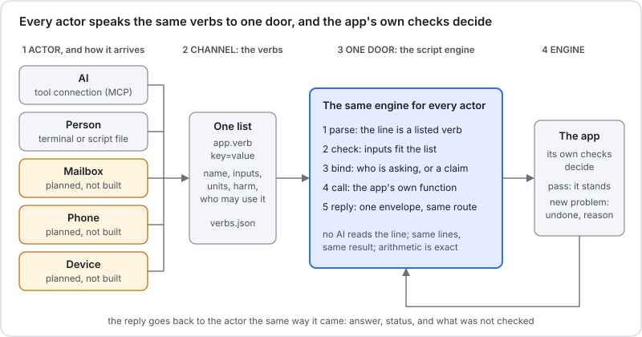

译自英文页面；以英文页面为准。查看英文。
Fast Script 用户指南¶
一次给 BIM 和 ERP 应用一条简短的命令，或在文件里写几行，就能拿回应用自己的答案。同样的几行，你在终端里能用，AI 也能用。
这是唯一入口（the door，下文简称“入口”）的指南：它是一个放在各个应用前面的小型脚本引擎。你写一行，例如 modeller.lines building=HospitalGarage。入口读取这一行，对照一份固定的动词清单进行检查，调用应用自己的代码，再把答案连同“哪些没有检查”一起交还给你。入口里没有 AI。

请从左到右看这张图。
- 发起者（Actor）。发出这一行的人或程序，以及它送达的方式。目前是通过工具连接的 AI，或在终端前的人。邮箱、手机和设备已在规划中，尚未建成。
- 通道：动词。发起者可以说的全部内容，列成一张清单。每个动词都有一段简明的说明、它的输入，以及一个危害等级。完整清单见下文。
- 唯一入口：脚本引擎。它解析这一行，检查输入，把这一行与提出请求的人绑定，调用应用，然后回复。所有发起者都经过同一个入口，所以同一行会得到同样的答案。
- 引擎：应用。由应用自己的检查来裁决。造成新问题的改动会被撤销，并附上原因。
好答案并不意味着什么
没有发现问题的答案，绝不等于安全、合规或良好。每个答案都会列出哪些没有检查，哪些没有检查一节会再列一遍。结构工程师拥有最终决定权。
第一次来，想接入 AI？ 把 AI 接到入口的方法在 AI 提议者指南里。本页讲的是你自己编写的命令和脚本，以及如何阅读返回的结果。
red1 速览¶
red1 是最短的入口：一个提示符，同时面向 BIM 和 ERP 应用。每个短词都会打印出它所运行的完整入口行（在 → 之后），所以你会在使用中逐渐学会完整写法。完整的 red1 一节在本页靠后的位置。
| 输入 | 作用 |
|---|---|
red1 |
打开 red1> 提示符（node common/door/red1.js；或 red1，只需先 npm link 一次） |
cd Duplex · cd Element · cd Order · cd .. · pwd |
进入一栋建筑、它的某一类对象或某一类 ERP 记录；返回上一级；显示当前位置 |
count · ls · group storey · sum <column> · cat <id> |
在当前位置计数、列出、分组、求和、显示一条记录 |
ls element_name=*bath* |
用通配符查找：* 表示任意一串字符，? 表示一个字符，[abc] 表示其中之一 |
clash ARC MEP · 然后 ls · ls *Bath* |
以漏斗形式画出的碰撞；它们的行；与之匹配的行 |
clash |
打开该建筑各专业的菜单：用方向键或数字键选择，然后按回车 |
next <number> · do complete <number> |
显示一份单据现在可以做什么；执行它 |
menu · help · help verbs · exit |
ERP 菜单；各个短词；所有入口动词；退出 |
red1 'cd Duplex; count' |
在脚本里使用同样的短词，一次执行完 |
获取入口¶
你需要 Node 18 或更新的版本。这些步骤是在 Node 18.19 上运行的。
Modeller 动词需要四个文件。新建一个空文件夹，安装浏览器引擎，然后下载这四个文件：
mkdir fastscript && cd fastscript
npm init -y
npm install puppeteer@24
curl -O https://red1oon.github.io/bim-ootb/modeller/tools/edit_cli.js
curl -O https://red1oon.github.io/bim-ootb/modeller/tools/bim_mcp.js
curl -O https://red1oon.github.io/bim-ootb/common/door/door.js
curl -O https://red1oon.github.io/bim-ootb/common/door/verbs.json
这四个文件要放在同一个文件夹里。door.js 从 verbs.json 读取动词清单，并运行 edit_cli.js，后者会在没有窗口的情况下打开在线的 Modeller 页面。如果缺少某个文件，入口会指出是哪一个，并打印出它的 curl 行。bim_mcp.js 只用于连接 AI；本页的命令用不到它。
Viewer、对象和进度计划相关的动词需要完整检出（checkout）。它们不在这四个文件里。请取得整个 bim-ootb 仓库（git clone https://github.com/red1oon/bim-ootb），并在它的顶层文件夹里运行 node common/door/door.js，而不是 node door.js。动词表会写明每个动词需要这两种方式中的哪一种。针对 Viewer 的单文件下载尚未做好。
你的第一条命令¶
一行，一个动词，key=value 键值对，= 两边不留空格。向 HospitalGarage 询问它的轴网：
$ node door.js 'modeller.lines building=HospitalGarage'
{"request":"d-mwhmmeq9-2276636-1","verb":"modeller.lines","actor":"human","status":"ok","answer":{"ok":true,"building":"HospitalGarage","edits":[],"ms":16010,"model":{"grid_source":"column-derived","system":"column-framed","material":"RC","mixed":true,"girders":228,"rotation_deg":-2,"frame":"building","lines":[{"id":"gx0","axis":"x","pos":128.131,"world":132.184},{"id":"gx1","axis":"x","pos":129.223,"world":133.277},{"id":"gx2","axis":"x","pos":133.277,"world":137.334},{"id":"gx3","axis":"x","pos":133.795,"world":137.851},{"id":"gx4","axis":"x","pos":134.811,"world":138.868},{"id":"gx5","axis":"x","pos":145.987,"world":150.051},{"id":"gx6","axis":"x","pos":157.163,"world":161.234},{"id":"gx7…
它会打开 Modeller 和这栋建筑，所以需要 10 到 40 秒。你看到的是一行 JSON，也就是一个信封（envelope）。这里只显示开头；轴网的线条太多，放不下。答案是应用自己的，原样放在 answer 里。这里 gx5 位于 145.987 m，gx6 位于 157.163 m，都是在这栋建筑自己的轴网上。status 是 ok。
‘request’ 从哪里来？
每一行都会得到一个请求编号（"request":"d-…"），并在运行之前写入一份日志，位置在 ~/.cache/bim_door/journal.jsonl。同一个编号发送两次，你得到的是第一次的答案，所以重试绝不会重复一次改动。入口还会在错误输出流上打印一行 §DOOR …；本指南只显示标准输出。
一个动词完成整个请求¶
像“把 gx5 和 gx6 之间的开间做成 13 m 宽”这样的请求有好几个步骤：读取轴网、算出移动量、试做平移。动词 modeller.widen_bay 一次做完这三步。它的输入是两条轴线和你想要的宽度：
$ node door.js 'modeller.widen_bay building=HospitalGarage from=gx5 to=gx6 target=13' > widen.json; echo "exit $?"
exit 3
退出码是第一个答案：0 表示 ok，3 表示应用给出的答案不是一个单纯的“是”（被拒绝、被挂起或无法判定），1 表示出错，2 表示命令写错了。现在看看文件里面。先是整个请求，然后是它的两个步骤，每个步骤各有自己的信封：
$ grep -o '"request":"[^"]*","verb":"[^"]*","actor":"[^"]*","status":"[^"]*"' widen.json
"request":"d-mwhmmrdh-2276921-1","verb":"modeller.widen_bay","actor":"human","status":"refused"
"request":"d-mwhmmrdh-2276921-1.1","verb":"modeller.lines","actor":"human","status":"ok"
"request":"d-mwhmmrdh-2276921-1.2","verb":"modeller.try_shift","actor":"human","status":"refused"
第一步读取了轴网。它找到了现在的开间：
$ grep -o '"id":"gx[56]","axis":"x","pos":[0-9.]*' widen.json
"id":"gx5","axis":"x","pos":145.987
"id":"gx6","axis":"x","pos":157.163
所以开间是 157.163 − 145.987 = 11.176 m。要达到 13 m，轴线 gx6 以及它之后的每一条轴线，都必须移动 1.824 m。入口算出了这个数，第二步把它传了下去：
$ grep -o '"move":[0-9.]*' widen.json | head -1
"move":1.824
应用试做了这次平移，检查了它，然后叫停了它：
$ grep -o '"why":"[^"]*"' widen.json | tail -1
"why":"line 2 (modeller.try_shift): stopped: Beam spans over limit: 91 -> 92 (limit 12 m, RC); bay gx5-gx6 newly over the limit: 13 m"
这次改动被做出、被评判，然后被撤销。任何东西都不会被保存。叫停背后的数字在应用的报告里：
$ grep -o '"bay":"gx5-gx6"[^}]*' widen.json
"bay":"gx5-gx6","before":11.176,"after":13,"newly_over":true
开间从 11.176 m 变成 13 m，超过了这栋建筑对混凝土梁规定的 12 m 上限（limit 和 material 来自建筑本身）。这就是 Garage 这次请求的全部经过：13 m 的开间需要再增加一条柱轴线。
一个脚本：多行，一个命名结果¶
脚本是一个文本文件，每行一条命令。一行可以以一个名字加 = 开头，这样它的答案会保留给下面的各行使用。-- 之后的内容都是注释。把下面的内容保存为 bay.door：
-- read the grid, then widen the bay between gx5 and gx6 to exactly 12 m
lines = modeller.lines building=HospitalGarage
modeller.try_shift building=HospitalGarage line=gx6 move={12 - (lines.model.lines[gx6].pos - lines.model.lines[gx5].pos)}
用 --script 运行它：
$ node door.js --script bay.door > bay.json; echo "exit $?"
exit 0
{ } 里面的文字是算术表达式。其中可以使用数字、+ - * /、括号，以及某个命名结果的字段。lines.model.lines[gx6].pos 的意思是：在名为 lines 的答案里，取 model 之下 lines 中 id 为 gx6 的那一项，再取它的 pos。只能读取动词已声明的字段；任何其他名字都会报错，并说明原因。
这里的算术是精确的十进制，不是浮点数。用浮点数的计算机会得到 12 - 11.176 = 0.8239999999999998。入口得到的是这个：
$ grep -o '"change":{"kind":"[^"]*","grid":"[^"]*","through":"[^"]*","lines":[0-9]*,"delta":[0-9.]*' bay.json
"change":{"kind":"block-shift","grid":"gx6","through":"gx16","lines":11,"delta":0.824
脚本从上到下运行，并在遇到第一行不是 ok 的地方停下。这里两行的答案都是 ok：
$ grep -o '"request":"[^"]*","verb":"[^"]*","actor":"[^"]*","status":"[^"]*"' bay.json
"request":"d-mwhmni28-2277438-2","verb":"modeller.lines","actor":"human","status":"ok"
"request":"d-mwhmntjy-2277438-3","verb":"modeller.try_shift","actor":"human","status":"ok"
恰好 12 m 时，应用没有发现新问题：超过上限的梁跨数量保持原样。
$ grep -o '"label":"Beam spans over limit","scope":"[^"]*","state":"JUDGED","before":[0-9]*,"after":[0-9]*,"delta":[0-9]*' bay.json
"label":"Beam spans over limit","scope":"228 walked girders, RC (mixed building)","state":"JUDGED","before":91,"after":91,"delta":0
所以，同一栋建筑，要求 13 m 时被叫停，要求 12 m 时成立。ok 并不保证这栋建筑是好的：同样的未检查事项清单依然适用。
行的语法¶
| 部分 | 规则 |
|---|---|
| 一条命令 | app.verb key=value key=value，每行一条 |
| 含空格的值 | 放进双引号：text="a note" |
| 命名结果 | name = app.verb …；后面的行读取 name.field |
| 算术 | { … }，内含数字、+ - * /、括号和结果字段；精确十进制 |
| 注释 | -- 及该行其余部分 |
| 单位 | 从不写在行里；由动词决定用米、小时还是天 |
| 其他任何内容 | 不是命令：它会作为一个问题返回，而不是作为一个动作执行 |
最后一行是有意为之。与任何动词都不匹配的文字绝不会被猜测：
$ node door.js 'please widen the bay'
{"request":"d-mwhmo809-2277927-1","verb":null,"actor":"human","status":"refused","answer":{"question":"I could not read that as a command. A command is app.verb key=value … Which one do you mean? Type help.","verbs":["modeller.lines","modeller.try_shift","viewer.counts","viewer.clashes","viewer.film_path","viewer.schedule_at","viewer.schedule_compare","modeller.widen_bay","modeller.walk","object.describe","object.read","object.history","object.update","object.attach","object.count","object.list","object.sum","object.group","witness.run","witness.last","legacy.status","legacy.query","mis.column","legacy.compare","idempiere.where","mis.pack","legacy.up","legacy.refresh","legacy.witness","legacy.check","legacy.plugin","model.open","model.convert","model.addbay","model.undo","model.save","model.close","erp.find","erp.actions","erp.complete","erp.void","erp.close","erp.reverse","mis.describe","mis.read","mis.list","mis.sum","mis.group","mis.new","mis.update","mis.delete","mis.load","mis.add_window","ninja.exec","ninja.workflow","mis.diff","mis.menu","ninja.rollback","ninja.export","erp.column","erp.compare","erp.pack","erp.legacy_plugin","erp.describe","erp.read","erp.list","erp.sum","erp.group","erp.new"]},"why":"not a command: \"please widen the bay\"","notChecked":[],"ops":[],"next":[],"ms":0}
阅读回复¶
每一行，无论来自哪个发起者，得到的都是同一种信封。请按顺序阅读这些字段。
| 字段 | 含义 |
|---|---|
status |
ok、refused、claim、error 或 inconclusive。先读这一项 |
why |
状态不是 ok 时的原因 |
answer |
应用自己的答案，原样不动 |
notChecked |
这次检查没有覆盖的内容。务必转告给相关的人 |
request、verb、actor |
哪一行、哪个动词、谁提出的 |
ops |
写入了什么（对会写入的动词而言） |
next |
保留字段；目前为空 |
ms |
用了多长时间 |
五种状态，各取自一次真实运行：
ok. 应用作了答复，没有任何东西被扣下。本页的第一条命令就是一例。即便如此，也要读 notChecked。
refused. 应用给出的答案不是“是”。上面 13 m 的请求就是一例：它被试做、被评判、被撤销，why 说明了原因。拒绝是一种答案，不是故障。不是命令的文字同样是 refused（上面那个问题）。
error. 这一行本身有错：缺少输入、动词未知、值的类型不对。什么都没有运行。
$ node door.js 'modeller.lines'
{"request":"d-mwhmo856-2277937-1","verb":"modeller.lines","actor":"human","status":"error","answer":null,"why":"missing input: building","notChecked":[],"ops":[],"next":[],"ms":2}
claim. 这一行读懂了，但发起者没有允许它的凭证，所以入口把它扣下，不运行它。这是针对 AI 的安全规则，它取决于动词，而不取决于发起者。参见什么是待确认请求。
$ node door.js --actor ai --request ai-1 'object.update building=Duplex kind=Element uu=abc column=Name value=x'
{"request":"ai-1","verb":"object.update","actor":"ai","status":"claim","answer":null,"why":"actor ai has proof \"local-user\", which allows read/trial verbs; object.update is writes. Held as a claim, not run. A person confirms it with: door.js --confirm ai-1","notChecked":[],"ops":[],"next":[],"ms":5}
inconclusive. 应用无法判定，并且明说了。它绝不会被改成 ok。这里 Viewer 对 ARC 和 ZZZ 这一对没有碰撞规则。这条需要完整检出：
$ node common/door/door.js 'viewer.clashes building=Duplex discA=ARC discB=ZZZ'
{"request":"d-mwhmo8hh-2277957-1","verb":"viewer.clashes","actor":"human","status":"inconclusive","answer":null,"why":"the Viewer could not answer (exit 1): the Viewer says INCONCLUSIVE: no rule for ARC/ZZZ in clash_rules.json","notChecked":[],"ops":[],"next":[],"ms":24342}
什么是待确认请求（claim）¶
每个动词都有一个危害等级（harm class）：read（不改变任何东西）、trial（在一个用完即弃的副本上做改动，评判后绝不保存）、writes、posts 或 sends。这个等级在动词清单里只写一次，所以没有任何发起者能绕开它。
每个发起者都有一份凭证。在终端前的人，对每个等级都被信任。AI 只对 read 和 trial 被信任：它可以看，也可以试，但 AI 发出的 writes、posts 或 sends 动词会被当作待确认请求挂起，上面的 object.update 那一行就是这样。完全没有凭证的发起者，例如来自陌生发件人的邮件，只能读，别的都不行：
$ node door.js --actor email --request mail-0 'modeller.try_shift building=HospitalGarage line=gx6 move=1.824'
{"request":"mail-0","verb":"modeller.try_shift","actor":"email","status":"claim","answer":null,"why":"actor email has proof \"none\", which allows read verbs; modeller.try_shift is trial. Held as a claim, not run. A person confirms it with: door.js --confirm mail-0","notChecked":[],"ops":[],"next":[],"ms":2}
被挂起的待确认请求不运行、不排队，也不会丢失：它在日志里，记在它的请求编号之下。入口不会替任何人确认任何东西。
确认一个待确认请求¶
由一个人凭请求编号放行被挂起的待确认请求，所以真正运行的这一行，正是当初提出的那一行。没有人需要重新输入它。这里，一封邮件请求做一次试移动，被挂起了：
$ node door.js --journal claims.jsonl --actor email --request mail-1 'modeller.try_shift building=HospitalGarage line=gx6 move=0.824'
{"request":"mail-1","verb":"modeller.try_shift","actor":"email","status":"claim","answer":null,"why":"actor email has proof \"none\", which allows read verbs; modeller.try_shift is trial. Held as a claim, not run. A person confirms it with: door.js --confirm mail-1","notChecked":[],"ops":[],"next":[],"ms":2}
--claims 列出正被挂起的内容：
$ node door.js --journal claims.jsonl --claims | grep -o '"actor":"[a-z]*","line":"[^"]*","verb":"[^"]*","harm":"[a-z]*"'
"actor":"email","line":"modeller.try_shift building=HospitalGarage line=gx6 move=0.824","verb":"modeller.try_shift","harm":"trial"
--confirm 以你的身份，把记录下来的那一行运行一次：
$ node door.js --journal claims.jsonl --confirm mail-1
{"request":"mail-1#confirmed","verb":"modeller.try_shift","actor":"human","status":"ok","answer":{"ok":true,"building":"HospitalGarage","edits":[{"tag":"EDIT_REPORT","version":1,"change":{"kind":"bloc…
回复是普通的回复，并写明它所确认的待确认请求。再问一次，不会运行任何东西：入口会根据自己的记录作答。
$ node door.js --journal claims.jsonl --confirm mail-1 | grep -o '"confirms":"[^"]*"'
"confirms":"mail-1"
有三条规则成立。只有在终端前的人才能确认：--actor ai --confirm … 会被拒绝，待确认请求继续被挂起。应用在确认的那一刻仍然会作出裁决，所以一行自提出以来已变得不对，就会连同应用给出的原因一起被拒绝。而且 AI 的工具连接根本没有确认命令。
这并不能证明什么。入口信任坐在本地终端前的任何人。一个被允许在你的机器上运行 shell 命令的 AI，可以自己输入 --confirm，就像它可以以你的身份输入一行命令一样。如果这一点重要，请让 AI 只能使用它的工具连接。
在你自己的脚本里使用入口¶
上面的一切都是 door.js，也就是 AI 连接所用的同一个文件。在你自己的程序里，把它当作命令来调用，并读取它的 JSON：退出码（0、3、1、2）说明该读答案还是读问题，status 则说明具体是哪一种。--actor human 是默认值；--actor ai 会让入口把这一行当作 AI 发出的。
询问某物是什么：object.describe¶
动词还可以向模型本身询问它包含什么。object.describe 是反射：它读取模型自己的字典，说明某一类对象有哪些属性、哪些子页签，以及哪些通用方法对它是合法的。它只读取字典的行，不会打开任何构件。它需要完整检出，并且需要模型自带字典的建筑（Duplex 就是）。
$ node common/door/door.js 'object.describe building=Duplex kind=Element'
{"request":"d-mwhmp6f0-2278556-1","verb":"object.describe","actor":"human","status":"ok","answer":{"kind":"Element","table":"elements_meta","uu":"3027c2ed-8cb6-5ccb-ae8c-fd7df2eca264","key":"elements_meta_uu","highVolume":true,"properties":[{"name":"guid","label":"GUID","type":"string","mandatory":true,"updateable":false,"key":false,"parent":false,"length":255,"displayed":true,"seq":10,"fieldReadOnly":true,"allowCopy":false},{"name":"ifc_class","label":"IFC Class","type":"list","mandatory":false,"updateable":true,"…
Element 可以使用哪些方法？
$ node common/door/door.js 'object.describe building=Duplex kind=Element' | grep -o '"methods":\[[^]]*\]'
"methods":["read","update","attach","history"]
未知的类别会报错，并列出模型里有的各个类别，所以猜错一次，就学到了正确的名字。
计数：object.count¶
object.count 回答“有多少”：模型里某一类记录有多少条。Duplex 把它的房间称为 Room 这个类别。它需要完整检出。
$ node common/door/door.js 'object.count building=Duplex kind=Room'
{"request":"d-mwhmp7mf-2278599-1","verb":"object.count","actor":"human","status":"ok","answer":{"kind":"Room","table":"model_room","filters":[],"count":5,"population":5,"verdict":"OK","summary":"5 Room"},"why":null,"notChecked":[],"ops":[],"next":[],"ms":594}
加上 column=value 可以缩小计数范围。该列必须是这个类别的属性（object.describe 会列出它们），并且答案会保留总体数（population），也就是缩小范围之前的数量：
$ node common/door/door.js 'object.count building=Duplex kind=Room storey="Level 1"'
{"request":"d-mwhmp87z-2278619-1","verb":"object.count","actor":"human","status":"ok","answer":{"kind":"Room","table":"model_room","filters":[{"column":"storey","value":"Level 1"}],"count":2,"population":5,"verdict":"OK","summary":"2 Room where storey = Level 1 (of 5)"},"why":null,"notChecked":[],"ops":[],"next":[],"ms":569}
这个类别没有的列会报错，指出该列并列出真正的列。它绝不会被当成“没有匹配”：
$ node common/door/door.js 'object.count building=Duplex kind=Room floor=1'
{"request":"d-mwhmp8u8-2278641-1","verb":"object.count","actor":"human","status":"error","answer":null,"why":"the object engine could not answer (exit 1): kind Room has no property \"floor\" (its properties: guid, type, name, parent_guid, object_type, predefined_type, center_x, center_y, center_z, size_x, size_y, size_z, room_gu…
完全没有房间的模型不会回答 0。它回答 inconclusive，因为什么都没有被计数。一个可以信赖的零，是在非空总体之内缩小范围后的计数。
布置器会放置什么：modeller.walk¶
Modeller 里有一个布置器（walker），它按照从真实建筑中测得的规则，放置某一个专业的配件（喷头、灯具、插座）。modeller.walk 是它的一次试运行：它说明布置器会放置什么，并且不改变任何东西。之后模型文件逐字节与之前相同，答案里也这样说明。它需要完整检出。完整的回复很长，所以这里只显示它的主要数字：
$ node common/door/door.js 'modeller.walk building=Duplex discipline=FP' | grep -o '"rules":"[^"]*"\|"count":[0-9]*,"placed":[0-9]*,"provisional":[0-9]*\|"byClass":{[^}]*}\|"modelUnchanged":[a-z]*'
"rules":"duplex_rules.db"
"count":46,"placed":0,"provisional":46
"byClass":{"IfcFireSuppressionTerminal":45,"IfcAlarm":1}
"modelUnchanged":true
count 是这次布置会放置的全部数量。provisional 是布置器自己标记为非最终的位置，例如上方没有找到天花板的配件。rules 是这栋建筑所属类别使用的规则集：住宅使用住宅规则。一次什么都没有放置的布置会回答 inconclusive，并附上布置器给出的原因。
在各行之间保持一个 Modeller 打开：model.open、model.convert、model.addbay、model.undo、model.save、model.close¶
这些行驱动的是一个在后台保持打开的 Modeller 页面（无界面，用 CPU 运行，不需要显卡），所以每一行都建立在前一行留下的结果之上。model.open sheets=<folder or a.dxf,b.dxf> type="Farming Shed" 打开 2D 图纸，model.convert 生成 3D 模型（页面自己的 Convert，即“转换”），model.addbay end=high|low 在重复开间建筑的那一端增加一个开间，model.undo 撤回最近一次改动，model.close 停止该页面。所有工作都由页面自己的函数完成；这一行只是按下人会按的按钮，并打印页面自己的答案。模型在那个页面里一直存在，直到你保存它：model.save 把它写成这个文件夹里的一个 .db 文件；当模型已改动且已知保存文件时，model.close 会先保存。它们需要 bim-ootb 的完整检出，并且你运行它们的那个文件夹保存着会话（一个名为 .model_session.json 的文件；端口只在本机监听，每个请求都带有一次性令牌）。
你会遇到的规则：在 model.open 之前的一行会被拒绝（“no session: model.open first”），第二次 model.open、第二次 model.convert，以及在 Convert 之前的 model.addbay 也同样被拒绝。只有当建筑类型声明了开间时才会提供开间（Farming Shed 声明了）；没有 type= 时，开间会被拒绝，并说明该类型没有声明规则。图纸必须带有标记：普通的图纸通不过这道关口。每一行需要几秒钟（这里：打开约 6 s，转换 3 s，一个开间 3 s；图纸更多时，转换最多用了 15 s）。保存：文件名只需指定一次，要么在 model.open … file=shed.db 上，要么在第一次 model.save file=shed.db 上。保存运行的是页面自己的 Save（保存）：先做碰撞检查（出现 RED 碰撞会阻止保存，与在屏幕上一样，并且什么都不会写入），然后把模型写成原生的 .db。这个棚屋的一次保存大约用半秒，答案会给出每一步的用时。有未保存的改动又没有文件时，model.close 会被拒绝，会话保持打开：请保存，或用 model.close discard=Y 有意丢弃这些改动。在什么都没有做出之前就保存，会被拒绝，并用页面自己的话说明。
下面的代码块把一个文件夹里 9 张带标记的棚屋图纸（由 SHED_SHEETS 指定）复制到 shed/，并依次运行这些行；请把 SHED_SHEETS 设为你自己的、装有带标记 .dxf 图纸的文件夹。
$ rm -rf shed shed.db; mkdir shed; cp "$SHED_SHEETS"/*.dxf shed/; D='node common/door/door.js --list'; eval "$D 'model.convert'" | grep -E '^error:'; eval "$D 'model.open sheets=shed type=\"Farming Shed\" file=shed.db'" | grep -E '^summary:'; eval "$D model.save" | grep -E '^error:'; eval "$D model.convert" | grep -E '^summary:'; eval "$D model.save" | grep -E '^(file|bytes|elements):'; eval "$D 'model.addbay end=high'" | grep -E '^(copies_by_class|summary):'; eval "$D model.undo" | grep -E '^summary:'; eval "$D model.close" | grep -E '^closed:'; ls -l shed.db | awk '{print "shed.db bytes: " $5}'; eval "$D model.undo" | grep -E '^error:'; rm -rf shed shed.db .model_session.log
error: no session in this folder: model.open first
error: nothing is open: model.open first
closed: true
error: no session in this folder: model.open first
model.addbay end=low 在另一端增加开间（铰点不同，同样是 29 份副本）。这些行没有检查的内容：成本与独立计数的对照（另有单独的测试做这件事），以及同一个文件夹里有多个会话的情况。
列表、求和与分组：erp.list、erp.sum、erp.group¶
count 回答“有多少”。另外三个只读动词分别回答“是哪些”“共多少”和“每种各有多少”。它们可以用于 ERP 字典里的任何类别（建筑的模型也有同样的三个，叫 object.list、object.sum、object.group）。它们需要完整检出。
erp.list 显示若干行。每一个列、筛选条件和排序都会对照字典检查，所以名字写错会报错，并列出真正的名字。加上 column=value 可以缩小列表范围。列表最多显示 50 行，除非 limit 另有指定（最多 1000），并且答案始终带有总数，所以较短的列表绝不会被误认为是全部。用 offset 翻阅较长的列表：
$ node common/door/door.js --list 'erp.list kind=Order docstatus=CO limit=3 columns=DocumentNo,DocStatus,GrandTotal sort=-DocumentNo'
DocumentNo DocStatus GrandTotal
80001 CO 100.7
80001 CO 100.7
800002 CO 2160
shown 3 of 14
erp.sum 把一个数值列精确地加起来。小数按小数相加，绝不用浮点数，所以金额不会漂移。erp.group 统计某一列每个取值对应的记录数，最常见的排在前面：
$ node common/door/door.js --list 'erp.sum kind=Order column=GrandTotal docstatus=CO'
kind: Order
table: C_Order
column: GrandTotal
filters: [{"column":"DocStatus","value":"CO"}]
n: 14
sum: 19505.9
population: 44
verdict: OK
summary: 19505.9 = sum of GrandTotal over 14 Order
$ node common/door/door.js --list 'erp.group kind=Order by=DocStatus'
DocStatus count
IP 22
CO 14
DR 6
CL 2
shown 4 of 4
完全没有记录的类别不会回答 0 或空列表。它回答 inconclusive，因为什么都没有被评判。
创建记录：erp.new¶
erp.new 按照 ERP 自己的窗口创建记录的方式创建一条记录。你指明类别和你已知的列；其余的由引擎按窗口的做法填写（默认值、业务伙伴带来的各项选择、取自序列的单据编号）。字典里没有的列会被拒绝，并且回复会列出真正的列。在此之后仍为空的必填列，会按名字被拒绝，并且什么都不写入。回复以 number 开头：也就是单据编号（Document No），接下来要用的就是它。
销售或采购单据需要 issotrx=Y 或 N。业务伙伴或产品可以按名字给出；名字没有匹配任何记录，或匹配到多条，都会被拒绝。一个明细行用编号指明它所属的单据：
$ rm -f /tmp/fast_guide_new.ops; BIM_OBJECT_OPLOG=/tmp/fast_guide_new.ops node common/door/door.js 'erp.new kind=Order issotrx=Y c_doctypetarget_id=132 c_bpartner_id=112 salesrep_id=101'
{"request":"d-mwhmq2lp-2280086-1","verb":"erp.new","actor":"human","status":"ok","answer":{"number":"50000","kind":"Order","table":"c_order","id":1500004,"docStatus":"DR","given":["IsSOTrx","C_DocTypeTarget_ID","C_BPartner_ID","SalesRep_ID"],"defaulted":52,"filled":["ad_client_id","ad_org_id","documentno","isselfservice","dateordered","datepromised","bill_bpartner_id","c_bpartner_location_id","bill_location_id","deliveryrule","priorityrule","m_warehouse_id","isdropship","deliveryviarule","freightcostrule","freightamt","ispriviledgedrate","shippingrateinquiry","invoicerule","m_pricelist_id","c_currency_id","c_conversiontype_id","isdiscountprinted","chargeamt","paymentrule","c_paymentterm_id","totallines","grandtotal","docstatus","c_doctype_id","ispayschedulevalid","copyfrom","docaction","posted","isdelivered","dateacct","amountrefunded","isapproved","processed","processing","istaxincluded","isinvoiced","isselected","isprinted","sendemail","istransferred","iscreditapproved","isactive","processedon","amounttendered","volume","weight"],"record":{"c_order_id":1500004,"ad_client_id":11,"ad_org_id":11,"isactive":"Y","created":"2026-11-15 17:25:44","createdby":101,"updated":"2026-11-15 17:25:44","updatedby":101,"issotrx":"Y","documentno":"50000","docstatus":"DR","docaction":"CO","processing":"N","processed":"N","c_doctype_id":0,"c_doctypetarget_id":132,"description":null,"isapproved":"N","iscreditapproved":"N","isdelivered":"N","isinvoiced":"N","isprinted":"N","istransferred":"N","isselected":"N","salesrep_id":101,"dateordered":"2026-11-15 00:00:00","datepromised":"2026-11-15 00:00:00","dateprinted":null,"dateacct":"2026-11-15 00:00:00","c_bpartner_id":112,"c_bpartner_location_id":108,"poreference":null,"isdiscountprinted":"Y","c_currency_id":100,"paymentrule":"P","c_paymentterm_id":105,"invoicerule":"D","deliveryrule":"A","freightcostrule":"I","freightamt":0,"deliveryviarule":"P","m_shipper_id":null,"c_charge_id":null,"chargeamt":0,"priorityrule":"5","totallines":0,"grandtotal":0,"m_warehouse_id":103,"m_pricelist_id":101,"istaxincluded":"N","c_campaign_id":null,"c_project_id":null,"c_activity_id":null,"posted":"N","c_payment_id":null,"c_cashline_id":null,"sendemail":"N","ad_user_id":null,"copyfrom":"N","isselfservice":"N","ad_orgtrx_id":null,"user1_id":null,"user2_id":null,"c_conversiontype_id":114,"bill_bpartner_id":112,"bill_location_id":108,"bill_user_id":null,"pay_bpartner_id":null,"pay_location_id":null,"ref_order_id":null,"isdropship":"N","volume":0,"weight":0,"ordertype":null,"c_pos_id":null,"amounttendered":0,"amountrefunded":0,"link_order_id":null,"m_freightcategory_id":null,"dropship_bpartner_id":null,"dropship_location_id":null,"dropship_user_id":null,"promotioncode":null,"c_ordersource_id":null,"processedon":0,"ispayschedulevalid":"N","c_cashplanline_id":null,"c_order_uu":"c1be6519-1439-4618-a5b3-7c7af36acfe9","shippingrateinquiry":"N","ispriviledgedrate":"N","c_opportunity_id":null,"quotationorder_id":null,"c_department_id":null,"c_costcenter_id":null},"ops":[{"op_type":"CRUD_UPDATE","table":"ad_sequence"},{"op_type":"CRUD_CREATE","table":"c_order"}]},"why":null,"notChecked":[],"ops":[{"op_type":"CRUD_UPDATE","table":"ad_sequence"},{"op_type":"CRUD_CREATE","table":"c_order"}],"next":[],"ms":6973}
$ BIM_OBJECT_OPLOG=/tmp/fast_guide_new.ops node common/door/door.js 'erp.new kind=C_OrderLine order=50000 m_product_id=137 qtyentered=2'
{"request":"d-mwhmq849-2280142-1","verb":"erp.new","actor":"human","status":"ok","answer":{"number":null,"kind":"Sales Order Line","table":"c_orderline","id":120002710,"docStatus":null,"given":["M_Product_ID","QtyEntered","C_Order_ID"],"defaulted":31,"filled":["ad_client_id","ad_org_id","c_bpartner_id","c_bpartner_location_id","datepromised","dateordered","line","m_warehouse_id","m_attributesetinstance_id","c_uom_id","qtyordered","qtydelivered","qtyreserved","qtyinvoiced","priceentered","priceactual","pricelist","freightamt","c_tax_id","discount","linenetamt","qtylostsales","processed","createshipment","createproduction","rramt","pricecost","pricelimit","c_currency_id","isactive","isdescription"],"record":{"c_orderline_id":120002710,"ad_client_id":11,"ad_org_id":11,"isactive":"Y","created":"2026-11-15 17:25:52","createdby":101,"updated":"2026-11-15 17:25:52","updatedby":101,"c_order_id":1500004,"line":10,"c_bpartner_id":112,"c_bpartner_location_id":108,"dateordered":"2026-11-15 00:00:00","datepromised":"2026-11-15 00:00:00","datedelivered":null,"dateinvoiced":null,"description":null,"m_product_id":137,"m_warehouse_id":103,"c_uom_id":100,"qtyordered":2,"qtyreserved":0,"qtydelivered":0,"qtyinvoiced":0,"m_shipper_id":null,"c_currency_id":100,"pricelist":3,"priceactual":3,"pricelimit":2.7,"linenetamt":6,"discount":0,"freightamt":0,"c_charge_id":null,"c_tax_id":104,"s_resourceassignment_id":null,"ref_orderline_id":null,"m_attributesetinstance_id":0,"isdescription":"N","processed":"N","qtyentered":2,"priceentered":3,"c_project_id":null,"pricecost":0,"qtylostsales":0,"c_projectphase_id":null,"c_projecttask_id":null,"rrstartdate":null,"rramt":0,"c_campaign_id":null,"c_activity_id":null,"user1_id":null,"user2_id":null,"ad_orgtrx_id":null,"link_orderline_id":null,"pp_cost_collector_id":null,"m_promotion_id":null,"c_orderline_uu":"337b125f-adeb-4412-bbb9-5584c995f8fa","createshipment":"N","createproduction":"N","c_department_id":null,"c_costcenter_id":null},"ops":[{"op_type":"CRUD_CREATE","table":"c_orderline"},{"op_type":"CRUD_UPDATE","table":"c_order"}]},"why":null,"notChecked":[],"ops":[{"op_type":"CRUD_CREATE","table":"c_orderline"},{"op_type":"CRUD_UPDATE","table":"c_order"}],"next":[],"ms":7403}
订单在有人完成它之前一直是草稿。因为这一行给出了订单的编号，订单的合计会随之更新，无需第二步：下面记录里的 totallines 和 grandtotal 就是这一行的金额（6）。订单自己的明细行列表不会由 erp.read 填入。
$ BIM_OBJECT_OPLOG=/tmp/fast_guide_new.ops node common/door/door.js --list 'erp.read kind=Order number=50000'
kind: Order
uu: 1500004
record: {"c_order_id":1500004,"ad_client_id":11,"ad_org_id":11,"isactive":"Y","created":"2026-11-15 17:25:44","createdby":101,"updated":"2026-11-15 17:25:44","updatedby":101,"issotrx":"Y","documentno":"50000","docstatus":"DR","docaction":"CO","processing":"N","processed":"N","c_doctype_id":0,"c_doctypetarget_id":132,"description":null,"isapproved":"N","iscreditapproved":"N","isdelivered":"N","isinvoiced":"N","isprinted":"N","istransferred":"N","isselected":"N","salesrep_id":101,"dateordered":"2026-11-15 00:00:00","datepromised":"2026-11-15 00:00:00","dateprinted":null,"dateacct":"2026-11-15 00:00:00","c_bpartner_id":112,"c_bpartner_location_id":108,"poreference":null,"isdiscountprinted":"Y","c_currency_id":100,"paymentrule":"P","c_paymentterm_id":105,"invoicerule":"D","deliveryrule":"A","freightcostrule":"I","freightamt":0,"deliveryviarule":"P","m_shipper_id":null,"c_charge_id":null,"chargeamt":0,"priorityrule":"5","totallines":6,"grandtotal":6,"m_warehouse_id":103,"m_pricelist_id":101,"istaxincluded":"N","c_campaign_id":null,"c_project_id":null,"c_activity_id":null,"posted":"N","c_payment_id":null,"c_cashline_id":null,"sendemail":"N","ad_user_id":null,"copyfrom":"N","isselfservice":"N","ad_orgtrx_id":null,"user1_id":null,"user2_id":null,"c_conversiontype_id":114,"bill_bpartner_id":112,"bill_location_id":108,"bill_user_id":null,"pay_bpartner_id":null,"pay_location_id":null,"ref_order_id":null,"isdropship":"N","volume":0,"weight":0,"ordertype":null,"c_pos_id":null,"amounttendered":0,"amountrefunded":0,"link_order_id":null,"m_freightcategory_id":null,"dropship_bpartner_id":null,"dropship_location_id":null,"dropship_user_id":null,"promotioncode":null,"c_ordersource_id":null,"processedon":0,"ispayschedulevalid":"N","c_cashplanline_id":null,"c_order_uu":"c1be6519-1439-4618-a5b3-7c7af36acfe9","shippingrateinquiry":"N","ispriviledgedrate":"N","c_opportunity_id":null,"quotationorder_id":null,"c_department_id":null,"c_costcenter_id":null}
children: [{"kind":"Sales Order Line","rows":[{"c_orderline_id":120002710,"ad_client_id":11,"ad_org_id":11,"isactive":"Y","created":"2026-11-15 17:25:52","createdby":101,"updated":"2026-11-15 17:25:52","updatedby":101,"c_order_id":1500004,"line":10,"c_bpartner_id":112,"c_bpartner_location_id":108,"dateordered":"2026-11-15 00:00:00","datepromised":"2026-11-15 00:00:00","datedelivered":null,"dateinvoiced":null,"description":null,"m_product_id":137,"m_warehouse_id":103,"c_uom_id":100,"qtyordered":2,"qtyreserved":0,"qtydelivered":0,"qtyinvoiced":0,"m_shipper_id":null,"c_currency_id":100,"pricelist":3,"priceactual":3,"pricelimit":2.7,"linenetamt":6,"discount":0,"freightamt":0,"c_charge_id":null,"c_tax_id":104,"s_resourceassignment_id":null,"ref_orderline_id":null,"m_attributesetinstance_id":0,"isdescription":"N","processed":"N","qtyentered":2,"priceentered":3,"c_project_id":null,"pricecost":0,"qtylostsales":0,"c_projectphase_id":null,"c_projecttask_id":null,"rrstartdate":null,"rramt":0,"c_campaign_id":null,"c_activity_id":null,"user1_id":null,"user2_id":null,"ad_orgtrx_id":null,"link_orderline_id":null,"pp_cost_collector_id":null,"m_promotion_id":null,"c_orderline_uu":"337b125f-adeb-4412-bbb9-5584c995f8fa","createshipment":"N","createproduction":"N","c_department_id":null,"c_costcenter_id":null}]},{"kind":"Order Tax","rows":[]},{"kind":"Order Payment Schedule","rows":[]},{"kind":"POS Payment","rows":[]}]
erp.new 是一个 writes 动词。由终端前的人运行它。AI 的 erp.new 会被当作待确认请求挂起，在有人确认之前什么都不会写入（见“什么是待确认请求”）。这些代码块使用一个临时的操作日志（op-log，/tmp/fast_guide_new.ops，先清空），所以运行它们不会触及你自己的数据。
处理任何表：mis.* 动词¶
MIS 是基础。ERP 就是 MIS 加上单据的生命周期。列出、读取、创建、修改、删除和载入记录，对字典里的每一张表都是一样的：客户、产品、你自己建的表。这些动词叫作 mis.*。只有单据才有的操作（完成、作废、关闭、冲销）仍属于 erp.*。较早的名字 erp.list、erp.read、erp.describe、erp.sum、erp.group 和 erp.new 依然可用：每个都是对应 mis.* 动词的旧名，给出同样的答案，所以你早先写的脚本不需要改动。
每一个会写入的 mis.* 动词，做的都是 ERP 自己窗口所做的事。它不会去编辑底层的数据库。默认值和回调（callout）会运行，检查会运行，拒绝时会说明原因，并且只要有任何一处被拒绝，就不会写入任何东西。
还缺什么？ mis.new … dry=Y 运行除保存之外的一切，并且什么都不写入。它回答在套用默认值之后哪些必填列仍然为空，让你知道该给出什么：
$ rm -f /tmp/fast_guide_mis.ops; BIM_OBJECT_OPLOG=/tmp/fast_guide_mis.ops node common/door/door.js --list 'mis.new kind=C_BPartner dry=Y'
dry: true
kind: Business Partner
table: c_bpartner
mandatory: ["Value","Name"]
needs: []
given: []
defaulted: 32
filled: ["ad_client_id","ad_org_id","c_bp_group_id","iscustomer","isvendor","isemployee","isprospect","issalesrep","so_creditlimit","totalopenbalance","istaxexempt","ispotaxexempt","issummary","isactive","c_paymentterm_id","m_pricelist_id","flatdiscount","c_dunning_id","shelflifeminpct","ismanufacturer","is1099vendor","documentc…
ops: []
创建、修改、读取。持有另一条记录的列，可以按名字给出。mis.list … names=Y 把这样的列显示为名字，就像窗口的网格那样：
$ BIM_OBJECT_OPLOG=/tmp/fast_guide_mis.ops node common/door/door.js --list 'mis.new kind=C_BPartner Value=GD100 Name="Guide Partner One"'
number: Guide Partner One
kind: Business Partner
table: c_bpartner
id: 1600010
docStatus:
given: ["Value","Name"]
defaulted: 32
filled: ["ad_client_id","ad_org_id","c_bp_group_id","iscustomer","isvendor","isemployee","isprospect","issalesrep","so_creditlimit","totalopenbalance","istaxexempt","ispotaxexempt","issummary","isactive","c_paymentterm_id","m_pricelist_id","flatdiscount","c_dunning_id","shelflifeminpct","ismanufacturer","is1099vendor","documentc…
record: {"c_bpartner_id":1600010,"ad_client_id":11,"ad_org_id":11,"isactive":"Y","created":"2026-11-15 17:26:07","createdby":101,"updated":"2026-11-15 17:26:07","updatedby":101,"value":"GD100","name":"Guide Partner One","name2":null,"description":null,"issummary":"N","c_bp_group_id":103,"isonetime":"N","isprospect":"N","isvendor…
ops: [{"op_type":"CRUD_CREATE","table":"c_bpartner"},{"op_type":"CRUD_CREATE","table":"ad_treenodebp"},{"op_type":"CRUD_CREATE","table":"c_bp_customer_acct"},{"op_type":"CRUD_CREATE","table":"c_bp_customer_acct"},{"op_type":"CRUD_CREATE","table":"c_bp_vendor_acct"},{"op_type":"CRUD_CREATE","table":"c_bp_vendor_acct"}]
$ BIM_OBJECT_OPLOG=/tmp/fast_guide_mis.ops node common/door/door.js --list 'mis.update kind=C_BPartner number="Guide Partner One" description="first supplier"' | grep -E '^(noop|given|changed|derived):'
noop: false
given: ["Description"]
changed: ["description"]
derived: []
$ BIM_OBJECT_OPLOG=/tmp/fast_guide_mis.ops node common/door/door.js --list 'mis.list kind=C_BPartner value=GD100 columns=Value,Name,Description,C_BP_Group_ID names=Y'
Value Name Description C_BP_Group_ID
GD100 Guide Partner One first supplier Standard Customers
shown 1 of 1
mis.update 只发送你给出的列；给出记录里已有的值不会改变任何东西，答案会说 noop。窗口不允许人编辑的列（只读字段，或已完成单据的任何列）会被拒绝，答案会指出规则。用值 <null> 清空一列。
指向另一条记录的列（业务伙伴、产品、仓库）必须指明一条存在、并且你的公司可以使用的记录。mis.new 检查每一个这样的列，mis.update 检查你所修改的那些，错误的值会被拒绝，并用旧版 ERP 自己的话，例如 Cannot save record in C_Order: Foreign ID 999999 not found in C_BPartner_ID，或者对另一家公司的记录给出 Cross tenant ID … not allowed in …。超出某个查找验证规则（窗口会提供的那份列表）的值不会被拒绝：旧版 ERP 也会保存它，因为这条规则只决定窗口提供什么。
删除。mis.delete 就是窗口的 Delete（删除）。窗口拒绝的，它也拒绝，并用引擎自己的话说明，而且不写入任何东西。标准业务伙伴被其他记录使用着：
$ BIM_OBJECT_OPLOG=/tmp/fast_guide_mis.ops node common/door/door.js --list 'mis.delete kind=C_BPartner id=112'
refused: true
reason: Business Partner Standard is not deleted: Record not deleted - dependent record found; nothing was written
$ BIM_OBJECT_OPLOG=/tmp/fast_guide_mis.ops node common/door/door.js --list 'mis.delete kind=C_BPartner number="Guide Partner One"' | grep -E '^(gone|opSummary):'
gone: true
opSummary: {"delete:c_bp_customer_acct":2,"delete:c_bp_vendor_acct":2,"delete:c_bpartner":1,"delete:ad_treenodebp":1}
从 CSV 载入多条。mis.load 读取一个 .csv（第一行是列名，每行一条记录），并对它运行 ERP 自己的 Migrate Excel Data（迁移 Excel 数据）流程。该流程要么全做要么全不做，所以 mis.load 先做检查（dry=Y，默认值），并且什么都不写入：它统计行数，并指出每一个有问题的行。它会在你的文件旁边写出 ….rejected.csv（有问题的行及原因）和 ….ok.csv（没问题的行）：
$ printf 'Value,Name,C_BP_Group_ID\nGD201,Guide Two,Standard Customers\nGD202,Guide Three,Nowhere\n' > /tmp/fast_guide_mis.csv; rm -f /tmp/fast_guide_mis.rejected.csv /tmp/fast_guide_mis.ok.csv; BIM_OBJECT_OPLOG=/tmp/fast_guide_mis.ops node common/door/door.js --list 'mis.load kind=C_BPartner file=/tmp/fast_guide_mis.csv'
kind: Business Partner
table: c_bpartner
file: /tmp/fast_guide_mis.csv
rows: 2
ok: 1
rejected: [{"row":2,"why":["C_BP_Group_ID: no C_BP_Group with Name=\"Nowhere\""]}]
unplaced: []
dry: true
loaded: false
files: {"rejected":"/tmp/fast_guide_mis.rejected.csv","ok":"/tmp/fast_guide_mis.ok.csv"}
summary: Nothing migrated: 1 row error(s). c_bpartner row 3 C_BP_Group_ID: no C_BP_Group with Name="Nowhere"
$ cat /tmp/fast_guide_mis.rejected.csv
Value,Name,C_BP_Group_ID,rejected_because
GD202,Guide Three,Nowhere,"C_BP_Group_ID: no C_BP_Group with Name=""Nowhere"""
当还有任何一行有问题时，用 dry=N 载入原文件会被拒绝。请修正有问题的行，或者载入没问题的行，那是另一次要么全做要么全不做的载入：
$ BIM_OBJECT_OPLOG=/tmp/fast_guide_mis.ops node common/door/door.js --list 'mis.load kind=C_BPartner dry=N file=/tmp/fast_guide_mis.ok.csv'
kind: Business Partner
table: c_bpartner
file: /tmp/fast_guide_mis.ok.csv
rows: 1
ok: 1
rejected: []
unplaced: []
dry: false
loaded: true
files: {}
summary: No worksheets : 1(C_BPartner = 1 records)
ops: 6
opSummary: {"create:c_bpartner":1,"create:ad_treenodebp":1,"create:c_bp_customer_acct":2,"create:c_bp_vendor_acct":2}
keys: [1600010]
AI 的 mis.new、mis.update、mis.delete 或 mis.load 会像 erp.new 一样被当作待确认请求挂起：在有人确认之前什么都不会写入。不提供对现有记录的批量更新；请对每条记录分别使用 mis.update，这样窗口的检查才会运行。
以某个角色查看和修改记录¶
每一个 mis.* 动词都接受 role=，即 ERP 中某个角色（role）的编号。不带角色时，什么都不过滤：你会看到所有客户（client）的所有记录。带上角色，你得到的就是该角色在它被授权的窗口里所得到的：它自己的客户和组织的记录，并且只有它的访问行所允许的记录和列。合计只统计这些记录。角色写在这一行里。它不是登录。
$ for r in '' ' role=103' ' role=12000'; do BIM_OBJECT_OPLOG=/tmp/fast_guide_mis.ops node common/door/door.js --list "mis.sum kind=C_Order column=GrandTotal$r" | grep -E '^(n|sum):' | tr '\n' ' '; echo; done
n: 43 sum: 74936.76
n: 8 sum: 9914.07
n: 27 sum: 55108.62
角色记录范围之外的记录，得到的回答与不存在的记录完全一样。角色只能读的列不能被修改。角色没有对应窗口的类别会被拒绝；角色 103 没有显示 Tax（税）的窗口：
$ BIM_OBJECT_OPLOG=/tmp/fast_guide_mis.ops node common/door/door.js --list 'mis.list kind=C_Tax role=103'
refused: true
reason: role 103 (GardenWorld User) is not granted a window that shows Tax (AD_Window_Access)
有五条规则目前还没有判定，使用其中任何一条的角色会被拒绝，而不是只检查一半：对某条记录的个人锁定、表的验证规则、其组织来自用户的角色、在组织树中带有汇总组织的角色，以及“依赖实体”（dependent entities）的记录访问。mis.load 不接受角色。
建一张你自己的表：mis.add_window¶
你放在电子表格里的一张表，可以变成一个真正的窗口：一张表、一个表单、一个菜单项和角色访问权限，而且无需为它写任何代码。用一个小的 .csv 描述它的各列，每列一行。只有 Column 是必填的。主键、客户和组织、有效标志以及审计列都会替你加上：
$ printf 'Column,Type,Length,Mandatory,Default,List,Help\nName,String,60,Y,,,Its name\nPurchaseDate,Date,,,,,When it was bought\nCost,Amount,,,,,\nCondition,List,,,GOOD,"GOOD=Good,FAIR=Fair,POOR=Poor",\nIsInsured,,,,,,\n' > AST_Asset.csv; cat AST_Asset.csv
Column,Type,Length,Mandatory,Default,List,Help
Name,String,60,Y,,,Its name
PurchaseDate,Date,,,,,When it was bought
Cost,Amount,,,,,
Condition,List,,,GOOD,"GOOD=Good,FAIR=Fair,POOR=Poor",
IsInsured,,,,,,
一行就能建出窗口（这里把表格又写了一遍，使这一行可以单独运行，在装有 common/ 的文件夹里）。表以文件名命名。dry=Y 检查这张表格，什么都不写入。有问题的表格会被拒绝，并列出每一处问题及其所在行，什么都不写入：
$ printf 'Column,Type,Length,Mandatory,Default,List,Help\nName,String,60,Y,,,Its name\nPurchaseDate,Date,,,,,When it was bought\nCost,Amount,,,,,\nCondition,List,,,GOOD,"GOOD=Good,FAIR=Fair,POOR=Poor",\nIsInsured,,,,,,\n' > AST_Asset.csv; rm -f /tmp/fast_guide_win.ops; BIM_OBJECT_OPLOG=/tmp/fast_guide_win.ops node common/door/door.js --list 'mis.add_window file=AST_Asset.csv' | grep -E '^(table|window|columns|lists|ops):'
table: AST_Asset
window: {"id":7100001,"name":"AST Asset"}
columns: ["Name","PurchaseDate","Cost","Condition","IsInsured"]
lists: [{"column":"Condition","values":["GOOD","FAIR","POOR"]}]
ops: 47
新的类别立刻可用于每一个 mis.* 动词，也可用于 mis.js。必填列会被要求填写，默认值会被填入，超出表格所列清单的值会被拒绝：
$ D='BIM_OBJECT_OPLOG=/tmp/fast_guide_win.ops node common/door/door.js --list'; eval "$D 'mis.new kind=AST_Asset Name=Tractor Cost=1200.50'" | grep -E '^(number|filled):'; eval "$D 'mis.new kind=AST_Asset Cost=5'" | grep reason; eval "$D 'mis.new kind=AST_Asset Name=Plough Condition=BAD'" | grep reason; eval "$D 'mis.list kind=AST_Asset columns=Name,Cost,Condition'"; rm -f AST_Asset.csv
number: Tractor
filled: ["ad_client_id","ad_org_id","isactive","condition","isinsured"]
reason: mandatory and still empty after the defaults and callouts: Name (give them as column=value)
reason: Condition Invalid value - BAD - Reference_ID=200277 - FAIR - GOOD - POOR; nothing was written
Name Cost Condition
Tractor 1200.5 GOOD
shown 1 of 1
类型有 String、Quantity、Amount、YesNo、Date、DateTime、Text 和 List。名字以 _ID 结尾的列是指向那张表的查找，以 Is 开头的列是是/否。主表之下的明细表要用工作簿来做：见下一节。
一行建出整个工作簿：ninja.exec¶
从一个 .csv 建一张表，只是小的情形。一个 Ninja 工作簿一次包含许多张表，说明哪张表在哪张表之下，还可以带上它们的第一批行。一行就能把这一切都建出来。
工作簿是一个普通的电子表格文件（.xlsx 或 .xls）：
| 工作表 | 它包含什么 |
|---|---|
1_RO_ModelHeader |
整套内容的名称，写在 Name 之下的第一个单元格里 |
2_RO_ModelMaker |
每张表一行：Master（它所属的上级表，或为空）、Name（这张表）、ColumnSet（它的各列，用逗号分隔） |
| 名字与某张表完全相同的工作表 | 要载入的行：第 1 行是列名 |
在 ColumnSet 里，普通的名字是文本。加前缀则表示另一种类型：D# 日期，A# 金额，Q# 数量，T# 长文本，Y# 是/否，L#Name=a/b/c 则是一份固定取值的清单。Master 是工作簿里另一张表的表，会成为那张表的窗口里的一个页签。
一个练习用的工作簿随入口一起提供：common/door/samples/Ninja_Practice.xlsx（一位患者、该患者的就诊、一次就诊的药品、一个房间，以及一个挂在 Business Partner 之下的转介）。dry=Y 读取它，说明它会建出什么，并且什么都不写入：
$ cp common/door/samples/Ninja_Practice.xlsx . ; rm -f /tmp/fast_guide_ninja.ops; BIM_OBJECT_OPLOG=/tmp/fast_guide_ninja.ops node common/door/door.js --list 'ninja.exec file=Ninja_Practice.xlsx dry=Y' | grep -E '^(bundle|tables|dataSheets|skipped|dry):'
bundle: Practice
tables: [{"table":"PR_Patient","master":null,"columns":4,"lists":["BloodGroup"]},{"table":"PR_Visit","master":"PR_Patient","columns":5,"lists":[]},{"table":"PR_Medicine","master":"PR_Visit","columns":3,"lists":[]},{"table":"PR_Roo…
dataSheets: [{"sheet":"PR_Patient","rows":3},{"sheet":"PR_Room","rows":2}]
skipped: []
dry: true
不带 dry=Y，同样的一行就会把它建出来：窗口、页签、列表、菜单项、角色访问权限，然后是各数据工作表的行。再运行第二次，什么都不会写入：
$ cp common/door/samples/Ninja_Practice.xlsx . ; D='BIM_OBJECT_OPLOG=/tmp/fast_guide_ninja.ops node common/door/door.js --list'; eval "$D 'ninja.exec file=Ninja_Practice.xlsx'" | grep -E '^(windows|detailTabs|dataSheets|ops):'; eval "$D 'ninja.exec file=Ninja_Practice.xlsx'" | grep -E '^(alreadyStaged|ops|summary):'
dataSheets: [{"sheet":"PR_Patient","rows":3,"loaded":3,"ops":3},{"sheet":"PR_Room","rows":2,"loaded":2,"ops":2}]
windows: [{"id":7100001,"name":"PR Patient"},{"id":7100004,"name":"PR Room"}]
detailTabs: 3
ops: 151
alreadyStaged: true
ops: 0
summary: this workbook is already staged (5 tables); nothing was written
每一张表都立刻可用于 mis.* 动词。上级之下的一条记录要写出上级的编号（这样对上级运行 mis.read 就会显示它之下的内容），清单之外的值会被拒绝：
$ D='BIM_OBJECT_OPLOG=/tmp/fast_guide_ninja.ops node common/door/door.js --list'; eval "$D 'mis.list kind=PR_Patient'"; eval "$D 'mis.new kind=PR_Visit Name=Checkup PR_Patient_ID=1 Fee=50'" | grep -E '^(number|id):'; eval "$D 'mis.new kind=PR_Medicine Name=Paracetamol PR_Visit_ID=1 Qty=10'" | grep -E '^(number|id):'; eval "$D 'mis.list kind=PR_Visit columns=Name,Fee,PR_Patient_ID'"; eval "$D 'mis.update kind=PR_Patient id=1 BloodGroup=Z'" | grep reason; rm -f Ninja_Practice.xlsx
PR_Patient_ID Name
1 Aminah
2 Boon
3 Chandra
shown 3 of 3
number: Checkup
id: 1
number: Paracetamol
id: 1
Name Fee PR_Patient_ID
Checkup 50 1
shown 1 of 1
reason: BloodGroup Invalid value - Z - Reference_ID=200277 - A - AB - B - O; nothing was written
已经存在的表。当工作簿提到系统里已有的表时，不会重复创建。如果工作表给这张表指定了 Master，这张表会被复用：工作表里的列被添加到它上面，并且它成为该上级之下的一个页签。如果工作表没有给它指定 Master，这一行就不去动它。答案会把两种情况都列出来（reused、leftAlone）。iDempiere 的 Ninja 也是这样做的。被复用的表保留它自己的规则，所以它的一条记录仍然必须填满这张表自己的必填列。
显示在两个窗口里的表，通过它自己的窗口写入，除非你用 window=（它的名称或编号）指明另一个窗口。对属于另一个窗口的列所作的拒绝，会告诉你该指明哪个窗口。
已有窗口上的一个页签。Master 不必是工作簿里的表。指明系统里已有的一张表，你的表就会成为那张表所在窗口的一个页签，排在已有页签之后，并且没有自己的窗口或菜单项。练习用的工作簿只用一行就做到了：PR_Referral，它的 Master 是 C_BPartner，所以一次转介就是 Business Partner（业务伙伴）窗口的一个页签。这同样是 iDempiere 的 Ninja 的规则：
$ cp common/door/samples/Ninja_Practice.xlsx . ; rm -f /tmp/fast_guide_att.ops; D='BIM_OBJECT_OPLOG=/tmp/fast_guide_att.ops node common/door/door.js --list'; eval "$D 'ninja.exec file=Ninja_Practice.xlsx'" | grep -E '^(attached|detailTabs):'; eval "$D 'mis.new kind=PR_Referral Name=Checkup C_BPartner_ID=112'" | grep -E '^(number|id):'; eval "$D 'mis.list kind=PR_Referral columns=Name,C_BPartner_ID names=Y'"; rm -f Ninja_Practice.xlsx
attached: [{"table":"PR_Referral","master":"C_BPartner","window":"Business Partner","windowId":123}]
detailTabs: 3
number: Checkup
id: 1
Name C_BPartner_ID
Checkup Standard
shown 1 of 1
它会拒绝下面这些情况，并且什么都不写入：第二个工作簿提到了另一个工作簿所建的表；一个工作簿里的表全都已经存在、又没有上级；一个 Master 既不在工作簿里，也不是这里有窗口的表；以及带有它不认识的前缀的 ColumnSet。名字与某张表的名字不完全相同的工作表会被跳过，并在答案里指出。答案的 notChecked 列出没有判定的内容。
从普通 CSV 建一张表：ninja.exec file=<Table>.csv¶
用 .csv 代替工作簿，得到的是一张表，它的表头就是模型，读取的方式与旧版 Ninja 读取它的方式相同。表就是文件的名字（table= 可指定另一个名字）。每个表头单元格按它的名字取类型，取第一条符合的规则：包含 Date → 日期；Qty → 数量；Amount → 金额；以 Is 或 In 开头 → 是/否（所以 Income 也是是/否，与旧版 Ninja 一样）；以 _ID 结尾 → 查找，其单元格是该记录的 Name；含有 = 和 /（Plan=Basic/Gold）→ 清单；其他一律 → 文本。像 C_BPartner_ID>Value 或 Code=X 这样的单元格，会建出位于 > 或 = 之前的那一列。其余各行就是数据行。表和它的行一起建出：如果有一行载入失败，则什么都不建，并且答案会指出是哪一行。前两列已经存在的行会被跳过，所以同一个文件再运行一次什么都不写入，而行数更多的文件只会添加新的行。对于已经存在的表，该文件只添加行，表头里不是该表某一列的内容会被拒绝。
$ printf 'Name,Join Date,Visits Qty,Fee Amount,IsMember,Plan=Basic/Gold\nAmir,2026-01-05,2,50,Y,Ba\nBea,2026-01-06,1,80,N,Go\n' > CL_Client.csv; rm -f /tmp/fast_guide_csv.ops; D='BIM_OBJECT_OPLOG=/tmp/fast_guide_csv.ops node common/door/door.js --list'; eval "$D 'ninja.exec file=CL_Client.csv'" | grep -E '^(tables|dataSheets):'; eval "$D 'mis.list kind=CL_Client columns=Name,JoinDate,VisitsQty,FeeAmount,IsMember,Plan'"; eval "$D 'ninja.exec file=CL_Client.csv'" | grep -E '^(ops|summary):'; printf 'Cara,2026-01-07,3,50,N,Ba\n' >> CL_Client.csv; eval "$D 'ninja.exec file=CL_Client.csv'" | grep -E '^summary:'; rm -f CL_Client.csv
tables: [{"table":"CL_Client","master":null,"columns":6,"lists":["Plan"]}]
dataSheets: [{"sheet":"CL_Client","rows":2,"loaded":2,"ops":2}]
Name JoinDate VisitsQty FeeAmount IsMember Plan
Amir 2026-01-05 00:00:00 2 50 Y Ba
Bea 2026-01-06 00:00:00 1 80 N Go
shown 2 of 2
ops: 0
summary: every line of CL_Client.csv is there already (2 skipped); nothing was written
summary: 1 line loaded into CL_Client, 2 skipped (already there)
给一张表加上单据列：ninja.workflow¶
一项功能可以在以后针对某一张表打开，而不必动工作簿。ninja.workflow 给一张表加上五个单据列（DocStatus、DocAction、Processed、DocumentNo、IsApproved），连同它们的清单和默认值，把它们显示在它的页签上，并填好已有的记录。它先查看，只添加缺少的部分，所以第二次运行什么都不写入：
$ cp common/door/samples/Ninja_Practice.xlsx . ; rm -f /tmp/fast_guide_wf.ops; D='BIM_OBJECT_OPLOG=/tmp/fast_guide_wf.ops node common/door/door.js --list'; eval "$D 'ninja.exec file=Ninja_Practice.xlsx'" | grep -E '^ops:'; eval "$D 'mis.new kind=PR_Visit Name=Before PR_Patient_ID=1'" | grep -E '^number:'; eval "$D 'ninja.workflow table=PR_Visit'" | grep -E '^(added|fields|rowsFilled|ops):'; eval "$D 'ninja.workflow table=PR_Visit'" | grep -E '^(alreadyDone|ops):'; eval "$D 'mis.new kind=PR_Visit Name=After PR_Patient_ID=1'" | grep -E '^docStatus:'; eval "$D 'mis.list kind=PR_Visit columns=Name,DocStatus,DocAction,Processed'"; eval "$D 'erp.complete kind=PR_Visit id=1'" | grep reason; rm -f Ninja_Practice.xlsx
ops: 151
number: Before
added: ["DocStatus","DocAction","Processed","DocumentNo","IsApproved"]
fields: 5
rowsFilled: 1
ops: 11
alreadyDone: true
ops: 0
docStatus: DR
Name DocStatus DocAction Processed
Before DR CO N
After DR CO N
shown 2 of 2
reason: Complete was not done: PR Visit has the document columns but no document class yet, so nothing says what Complete does on it (DocStatus stays DR)
它还不会说明 Complete（完成）在这样的表上做什么：答案里的 notMade 指出还缺什么，在那之前 erp.complete 会用平实的话被拒绝。系统自带的表会被拒绝。
撤销一个工作簿包，并把它写回工作簿：ninja.rollback、ninja.export¶
有两行把工作簿的流程闭合起来。ninja.rollback bundle=<name> 一次关闭一个工作簿所建的全部内容（它的窗口、页签、字段、列、表和菜单项，以及这个包自己的菜单节点），在日志里作为同一组。与旧版 Ninja 一样，有记录的表会阻止这一操作，并指出该表及其记录数；dry=Y 说明哪些内容会被关闭。系统自带的表保留自身，只失去这个包加到它上面的内容（Business Partner 上的页签会消失，Business Partner 保留）。运行两次，第二次什么都不写入；之后在同一个工作簿上运行 ninja.exec，就会把这个包带回来。ninja.export 把一个包、一个窗口或一张表写回成 ninja.exec 能读取的工作簿：表、Master 链接、带类型的列，以及每份清单的取值。编辑这份工作表后再次运行，或把模型作为文件带到另一台机器上。它只写模型，绝不写数据行；已存在的文件绝不会被覆盖；必须给出一个选择器（bundle=、window= 或 table=）。
$ cp common/door/samples/Ninja_Practice.xlsx . ; rm -f /tmp/fast_guide_rb.ops Practice_out.xlsx; D='BIM_OBJECT_OPLOG=/tmp/fast_guide_rb.ops node common/door/door.js --list'; eval "$D 'ninja.exec file=Ninja_Practice.xlsx data=N'" | grep -E '^ops:'; eval "$D 'ninja.export bundle=Practice file=Practice_out.xlsx'" | grep -E '^(file|lists|summary):'; eval "$D 'ninja.rollback bundle=Practice dry=Y'" | grep -E '^(dry|wouldSwitchOff):'; eval "$D 'ninja.rollback bundle=Practice'" | grep -E '^(ops|summary):'; eval "$D 'ninja.rollback bundle=Practice'" | grep -E '^(alreadyDone|ops):'; eval "$D 'ninja.export bundle=Practice file=Practice_out.xlsx'" | grep reason; rm -f Ninja_Practice.xlsx Practice_out.xlsx
ops: 151
file: Practice_out.xlsx
lists: 1
summary: wrote the model of 5 tables to Practice_out.xlsx
dry: true
wouldSwitchOff: 119
ops: 119
summary: Practice is rolled back: 119 dictionary rows switched off
ops: 0
alreadyDone: true
reason: Practice_out.xlsx exists already and is never overwritten. Nothing was written
导出不会带出的内容：验证规则和回调（暂存器 stager 从未把它们写进模型）。回滚是把行关闭，而不是删除它们，所以日志保留着它的历史。
一条记录之下的记录，以及用一张表格对照数据表：master=、mis.diff¶
master=Table/record 用在 mis.list、mis.sum 或 mis.group 上，只保留该记录之下的行，也就是它之下的页签所显示的行：mis.list kind=PR_Visit master=PR_Patient/Aminah 就是 Aminah 的就诊记录。斜线之后的记录是一个编号，或一个单据编号、名称或值，读取方式与 mis.update number= 读取它的方式相同。答案与普通筛选条件 PR_Patient_ID=1 的答案相同。不是该上级之下页签的表会被拒绝并附上原因，不存在的记录或两条记录共用的名字也一样（这时请给出编号）。之下没有任何内容的记录，得到的是真正的零，而不是一个空的问题。
mis.diff kind=<table> file=<sheet.csv> 在你载入之前，把一张表格与数据表作比较，并且什么都不写入。表格的每一行按它的单据编号匹配，否则按名称，否则按值（key= 可指定另一列），答案把它们分类：new（没有任何记录有这个键）、changed（某一列不同；已存的值和表格里的值都会显示）、same，以及 missing（表格没有提到的有效记录）。表格里重复的键、匹配多条记录的键，以及没有键的行，会被单独指出，不作比较。数字按数字相等（1200.50 与 1200.5），日期等于已存的日期，查找单元格则按已存的编号所指向的那条记录的名称来比较。mis.load 能否找到那个名称，这里不去问：那是 mis.load dry=Y 做的事。
$ cp common/door/samples/Ninja_Practice.xlsx . ; printf 'Name,BloodGroup\nAminah,A\nBoon,B\nDevi,O\n' > patients.csv; rm -f /tmp/fast_guide_md.ops; D='BIM_OBJECT_OPLOG=/tmp/fast_guide_md.ops node common/door/door.js --list'; eval "$D 'ninja.exec file=Ninja_Practice.xlsx'" | grep -E '^ops:'; eval "$D 'mis.update kind=PR_Patient number=Aminah BloodGroup=A'" | grep -E '^changed:'; for v in 'Name=Checkup PR_Patient_ID=1 Fee=50' 'Name=Follow-up PR_Patient_ID=1 Fee=30' 'Name=Checkup PR_Patient_ID=2 Fee=50'; do eval "$D 'mis.new kind=PR_Visit $v'" | grep -E '^id:'; done; eval "$D 'mis.list kind=PR_Visit master=PR_Patient/Aminah columns=Name,Fee'"; eval "$D 'mis.sum kind=PR_Visit column=Fee master=PR_Patient/1'" | grep -E '^summary:'; eval "$D 'mis.group kind=PR_Visit by=Name master=PR_Patient/2'"; eval "$D 'mis.list kind=PR_Visit master=PR_Room/1'" | grep -E '^reason:'; eval "$D 'mis.diff kind=PR_Patient file=patients.csv'" | grep -E '^(new|changed|missing|ops|summary):'; rm -f Ninja_Practice.xlsx patients.csv
ops: 151
changed: ["bloodgroup"]
id: 1
id: 2
id: 3
Name Fee
Checkup 50
Follow-up 30
shown 2 of 2
summary: 80 = sum of Fee over 2 PR Visit
Name count
Checkup 1
shown 1 of 1
reason: PR Visit is not a detail of PR Room: it has no link column PR_Room_ID (the parent link of a tab). Nothing was listed
new: [{"row":3,"key":"Devi"}]
changed: [{"row":2,"key":"Boon","changes":[{"column":"BloodGroup","table":"","sheet":"B"}]}]
missing: ["Chandra"]
ops: 0
summary: 1 new, 1 changed, 1 the same, 1 in the table and not in the file; nothing was written
mis.diff 不作比较的内容：数据表里表格没有提到的列。键是一列。上溯两级的上级（药品的患者）会被拒绝：它不是该药品的页签上级。
一个 MIS 行的文件，先试运行：--script … --dry¶
一套你想重复使用的设置（一个工作簿、它的第一批记录、一次检查）就是一个用 --script 运行的行文件，如脚本中所述：它在遇到第一行不是 ok 的地方停下，之后的行不会运行。加上 --dry 可以先试运行整个文件。这时文件运行在你的操作日志（BIM_OBJECT_OPLOG 必须指明它）和这个文件夹里各文件的一个用完即弃的副本上，所以后面的行看到的是前面的行所做的，与真正运行时完全一样，并得到真正运行时的答案。最后副本会被删除：你的操作日志、你的文件和日志都与之前一样。子文件夹里的文件不会被复制。作用于操作日志之外的行（Modeller 会话、旧版服务器、打包）无法被拦住，所以在试运行里它会被拒绝，文件就在那里停下。
$ cp common/door/samples/Ninja_Practice.xlsx . ; printf -- '-- the tables, a patient, a visit of hers, and the fees under her\nninja.exec file=Ninja_Practice.xlsx data=N\nmis.new kind=PR_Patient Name=Devi BloodGroup=O\nmis.new kind=PR_Visit Name=Checkup PR_Patient_ID=1 Fee=50\nmis.sum kind=PR_Visit column=Fee master=PR_Patient/Devi\n' > setup.door; rm -f /tmp/fast_guide_dry.ops; export BIM_OBJECT_OPLOG=/tmp/fast_guide_dry.ops; node common/door/door.js --list --script setup.door --dry | grep -E '^(tablesMade|id|summary):'; test -e /tmp/fast_guide_dry.ops && echo 'op-log: written' || echo 'op-log: not written'; node common/door/door.js --list --script setup.door | grep -E '^summary:'; echo "op-log: $(wc -l < /tmp/fast_guide_dry.ops) ops"; rm -f Ninja_Practice.xlsx setup.door
tablesMade: 5
id: 1
id: 1
summary: 50 = sum of Fee over 1 PR Visit
op-log: not written
summary: 50 = sum of Fee over 1 PR Visit
op-log: 153 ops
速查表：练习 MIS 的各行¶
这里的一切都是在你自己的副本上练习：第一行指定一个保存你所做操作的文件，没有任何东西会触及真实公司的账簿。删除那个文件就能从零重新开始。请在装有 common/ 的文件夹（一份 bim-ootb 检出）里运行这些行。
| 步骤 | 输入这个 | 你得到什么 |
|---|---|---|
| 设置 | export BIM_OBJECT_OPLOG=~/practice.ops |
下面每一行现在都把它的工作保存在那个文件里 |
| 重新开始 | rm -f ~/practice.ops |
又是一份空的练习 |
| 少打字 | alias d='node common/door/door.js --list' |
之后一行就写成 d '<verb> <inputs>' |
| 询问有什么 | d 'help all' |
每个动词及其输入 |
| 建五张表 | cp common/door/samples/Ninja_Practice.xlsx . ; d 'ninja.exec file=Ninja_Practice.xlsx' |
患者、就诊、药品、房间和转介，并载入了 3 位患者和 2 个房间 |
| 建之前先试 | d 'ninja.exec file=Ninja_Practice.xlsx dry=Y' |
它会建出什么；什么都不写入 |
| 建一张表 | d 'mis.add_window file=AST_Asset.csv' |
用一个列出各列的 .csv 建出一个窗口（见上面的一节） |
| 列出 | d 'mis.list kind=PR_Patient' |
各行 |
| 列出部分列 | d 'mis.list kind=PR_Visit columns=Name,Fee' |
只有那些列 |
| 它能容纳什么 | d 'mis.describe kind=PR_Patient' |
它的列、类型和清单 |
| 添加 | d 'mis.new kind=PR_Patient Name=Devi BloodGroup=O' |
一条新记录及其编号 |
| 在上级之下添加 | d 'mis.new kind=PR_Visit Name=Checkup PR_Patient_ID=1 Fee=50' |
患者 1 的一次就诊 |
| 再往下一级添加 | d 'mis.new kind=PR_Medicine Name=Paracetamol PR_Visit_ID=1 Qty=10' |
就诊 1 的一种药品 |
| 读取一条及其之下的内容 | d 'mis.read kind=PR_Patient id=1' |
该患者和就诊记录 |
| 修改 | d 'mis.update kind=PR_Patient id=1 BloodGroup=AB' |
修改后的记录 |
| 看一次拒绝 | d 'mis.update kind=PR_Patient id=1 BloodGroup=Z' |
被拒绝：Z 不在清单里 |
| 删除 | d 'mis.delete kind=PR_Room id=2' |
该记录没有了 |
| 求和 | d 'mis.sum kind=PR_Visit column=Fee' |
合计 |
| 按某一列计数 | d 'mis.group kind=PR_Patient by=BloodGroup' |
每个取值各一个计数 |
| 载入多行 | d 'mis.load kind=PR_Room file=rooms.csv' |
一份预览；加上 dry=N 才真正载入 |
| 在屏幕上操作 | node common/door/mis.js kind=PR_Patient |
一份用按键移动的列表；+ 添加，Enter 编辑 |
| 换一个角色 | 在一行上加 role=102 |
该角色可以看到和做什么 |
| 在系统的一张表之下添加 | d 'mis.new kind=PR_Referral Name=Checkup C_BPartner_ID=112' |
业务伙伴 112 上的一次转介（Business Partner 窗口的一个页签） |
| 给一张表加上单据列 | d 'ninja.workflow table=PR_Visit' |
每次就诊（新旧都有）上都有一个状态（DR） |
| 撤销一个工作簿的包 | d 'ninja.rollback bundle=Practice' |
它建出的一切都被关闭（表里有记录时被阻止）；先用 dry=Y |
| 把一个包写回成工作簿 | d 'ninja.export bundle=Practice file=Practice_out.xlsx' |
模型，可以编辑后再次运行 |
| 一条记录之下 | d 'mis.list kind=PR_Visit master=PR_Patient/1' |
只有患者 1 的就诊；mis.sum 和 mis.group 上也可以 |
| 载入前对照一张表格 | d 'mis.diff kind=PR_Patient file=patients.csv' |
新增、已改、相同和缺失的行；什么都不写入 |
| 保持一个 Modeller 打开 | d 'model.open sheets=shed type="Farming Shed" file=shed.db'，然后 d model.convert、d 'model.addbay end=high'、d model.undo、d model.close |
2D 图纸变成 3D ，加上一个开间再撤回；每一行几秒钟；关闭时保存到 shed.db |
| 立即保存模型 | d model.save（第一次用 d 'model.save file=shed.db'） |
先做碰撞检查，再写出 shed.db；有 RED 碰撞时被拒绝 |
| 不保存就关闭 | d 'model.close discard=Y' |
有意丢弃这些改动（没有保存文件时，普通的关闭会被拒绝） |
| 先试运行整个文件 | node common/door/door.js --list --script setup.door --dry |
每一行的真实答案；什么都不保留（需要 BIM_OBJECT_OPLOG） |
| 从 CSV 建一张表 | d 'ninja.exec file=CL_Client.csv' |
从表头建出这张表，并载入它的各行；再运行一次，只载入新的行 |
| 屏幕上的菜单 | d menu（或 d 'menu role=102'） |
ERP 菜单；Enter 打开一个窗口的列表，Esc 返回，/ 查找 |
| 找一个菜单项 | d 'mis.menu role=102 find=partner' |
名称里含有“partner”的菜单项，连同它们所在的文件夹 |
| 在另一个窗口里操作 | 加上 window=<name or id>，用于 mis.new、mis.update 或 mis.delete |
该窗口页签的字段，用于显示在两个窗口里的表 |
速度。在一个大型工作簿之后，入口会保存一份操作日志所建内容的映像，这样之后的行就不必把每一个操作再应用一遍；只有当你的操作日志文件的开头仍与原来完全一样时才会使用它，ERP_OPIMAGE=off 可以把它关掉。
你自己的工作簿：复制那个练习文件，把 2_RO_ModelMaker 的各行改成你自己的表（用你自己的前缀，例如 MY_，可以把它们与已有的表区分开；系统里已有的名字会被复用，而不是重复创建），并在它上面运行 ninja.exec，先带上 dry=Y。这张表里的各行，就是上面各节中运行过的动词；这张表本身不会被本页的测试重新运行，灰色的代码块才会。
在终端里操作：mis.js¶
如果你更愿意选而不是打字，mis.js 会显示一个带指针的列表。它只是一个前端：每一次按键都会编译成上面某一条入口行，经过同一个入口运行（有日志记录，经过待确认请求检查），并且屏幕在运行它之前先打印这一行。上和下移动指针。左和右在指针所在行的按钮之间移动（对记录是 [U Edit] [D Delete] [C Copy]；对单据则是引擎现在允许的操作，例如 [C Complete] [V Void]，并且一旦完成就没有 Delete）。回车运行高亮的按钮。+ 开始一条新记录，Delete 会询问 y/N，Esc 退出并且什么都不写入。
在终端里，它用方向键绘制界面。使用 --plain 时，它从管道读取按键名，所以脚本、读屏软件和 AI 看到的，与人看到的完全一样：
$ printf 'Down Right Esc\n' | BIM_OBJECT_OPLOG=/tmp/fast_guide_mis.ops node common/door/mis.js kind=C_BPartner name=Standard limit=3 --plain 2>/dev/null
-> mis.describe kind=C_BPartner
-> mis.list kind=C_BPartner columns=C_BPartner_ID,Value,Name,Logo_ID,C_BP_Group_ID names=Y limit=3 offset=0 name=Standard
C_BPartner (name=Standard) shown 1-2 of 2 [+ New] no role: nothing is filtered
C_BPartner_ID Value Name Logo_ID C_BP_Group_ID
> 112 Standard Standard Standard Customers >[U Edit]< [D Delete] [C Copy]
1300112 Standard Standard Standard Customers
the line it will run: mis.read kind=C_BPartner id=112
Up/Down row Left/Right chip Enter run + new PageDown next Esc quit
key Down
C_BPartner (name=Standard) shown 1-2 of 2 [+ New] no role: nothing is filtered
C_BPartner_ID Value Name Logo_ID C_BP_Group_ID
112 Standard Standard Standard Customers
> 1300112 Standard Standard Standard Customers >[U Edit]< [D Delete] [C Copy]
the line it will run: mis.read kind=C_BPartner id=1300112
Up/Down row Left/Right chip Enter run + new PageDown next Esc quit
key Right
C_BPartner (name=Standard) shown 1-2 of 2 [+ New] no role: nothing is filtered
C_BPartner_ID Value Name Logo_ID C_BP_Group_ID
112 Standard Standard Standard Customers
> 1300112 Standard Standard Standard Customers [U Edit] >[D Delete]< [C Copy]
the line it will run: mis.delete kind=C_BPartner id=1300112
Up/Down row Left/Right chip Enter run + new PageDown next Esc quit
key Esc
C_BPartner (name=Standard) shown 1-2 of 2 [+ New] no role: nothing is filtered
C_BPartner_ID Value Name Logo_ID C_BP_Group_ID
112 Standard Standard Standard Customers
> 1300112 Standard Standard Standard Customers [U Edit] >[D Delete]< [C Copy]
the line it will run: mis.delete kind=C_BPartner id=1300112
Up/Down row Left/Right chip Enter run + new PageDown next Esc quit
给命令加上 role=103，屏幕发出的每一行都会带上这个角色；标题行会指明它。没有角色时，标题行会说明什么都没有过滤。
表单只询问引擎无法填写的内容（即上面的试运行）。键入内容就填入字段，Tab 或 Enter 移到下一项，在最后一个字段上按 Enter 会显示它将要运行的那一行。以 = 开头的行是键入的文字。这里是整个会话，缩减为它所运行的入口行：
$ printf '+\n=GD300\nTab\n=Guide Four\nEnter\ny\nEsc\n' | BIM_OBJECT_OPLOG=/tmp/fast_guide_mis.ops node common/door/mis.js kind=C_BPartner value=GD300 --plain 2>/dev/null | grep '^->'
-> mis.describe kind=C_BPartner
-> mis.list kind=C_BPartner columns=C_BPartner_ID,Value,Name,Logo_ID,C_BP_Group_ID names=Y limit=10 offset=0 value=GD300
-> mis.new kind=C_BPartner dry=Y
-> mis.new kind=C_BPartner Value=GD300 Name="Guide Four"
-> mis.list kind=C_BPartner columns=C_BPartner_ID,Value,Name,Logo_ID,C_BP_Group_ID names=Y limit=10 offset=0 value=GD300
编辑的做法相同：它只显示窗口允许人编辑的列，查找列显示为名字，并且只发送你改动的部分。复制是从指针所在的那一条开始新建一条记录，所以必须修改应当唯一的内容（重复的会被拒绝，而你键入的内容会保留）。设置 MIS_SESSION_FILE=session.door，终端会话就会把它运行过的各行记录下来，每行一条，成为一个你可以阅读并再次运行的脚本。
屏幕上的菜单：menu 和 mis.menu¶
node common/door/door.js menu（用速查表里的别名是 d menu；在 red1 shell 里是 menu）在终端里打开 ERP 菜单，就是浏览器版 ERP 所显示的同一份菜单，文件夹相同，顺序相同。加上角色（d 'menu role=102'），你就只会看到该角色可以打开的内容。上和下，或一个数字，选取一个菜单项；Enter 打开一个文件夹，或一个窗口的列表屏幕（即上面的 mis.js 屏幕，作用于该窗口第一个页签的表）；Esc 返回上一级，在最顶层则退出；/ 按名称查找菜单项；? 显示按键。流程、报表或表单会说明它在浏览器版 ERP 里打开，并且不运行任何东西。和本页其他各处一样，屏幕只是替你键入入口行，并在运行每一行之前把它打印出来（那些 -> 行），所以你在屏幕上做的事，也可以自己键入，或者放进脚本里。
菜单本身就是一条入口行，mis.menu [role=] [find=]。这里用键入的按键来驱动屏幕（--plain 从输入读取它们），查找“partner”并打开第三个匹配项：
$ rm -f /tmp/fast_guide_menu.ops; printf '/\n=partner\nEnter\n3\nEsc\nEsc\nq\n' | BIM_OBJECT_OPLOG=/tmp/fast_guide_menu.ops node common/door/door.js 'menu role=102' --plain | grep -E '^(-> |key |Menu|find|> )'
-> mis.menu role=102
Menu (role 102) 294 windows
> 1 ▸ System Admin
key /
Menu (role 102) 294 windows
> 1 ▸ System Admin
find: _ (Enter search, Esc cancel)
key =partner
Menu (role 102) 294 windows
> 1 ▸ System Admin
find: partner_ (Enter search, Esc cancel)
key Enter
-> mis.menu find=partner role=102
find "partner" (role 102) 294 windows
> 1 System Admin > Data > Data Import > Import Business Partner
key 3
-> (open Business Partner Group: the list screen on C_BP_Group)
-> mis.describe kind=C_BP_Group role=102
-> mis.list kind=C_BP_Group columns=C_BP_Group_ID,Value,Name,Description names=Y limit=10 offset=0 role=102
key Esc
find "partner" (role 102) 294 windows
> 3 Partner Relations > Business Partner Rules > Business Partner Group
key Esc
Menu (role 102) 294 windows
> 1 ▸ System Admin
key q
Menu (role 102) 294 windows
> 1 ▸ System Admin
选择答案如何显示，并把它保存下来¶
除非你另有要求，回复就是 JSON 信封。有三个开关，把答案的行显示成人或电子表格能读懂的样子；入口所记录的仍然是信封：
--list：一张对齐的表，结尾是shown N of TOTAL。只有一条记录的回复显示为field: value的行。--csv：把各行输出为 CSV（RFC 4180：含有逗号、引号或换行的单元格会加引号；数字与引擎返回的完全一致）。--out FILE把所选的形式写入当前文件夹里的一个文件，而不是显示在屏幕上。被拒绝、被挂起或无法判定的行不会写出文件，并会如此说明。
$ node common/door/door.js --csv 'erp.list kind=Order docstatus=CO limit=3 columns=DocumentNo,DocStatus,GrandTotal sort=-DocumentNo'
DocumentNo,DocStatus,GrandTotal
80001,CO,100.7
80001,CO,100.7
800002,CO,2160
在脚本里，在一行的末尾加上 > file，可以把那一行的答案送入脚本所在文件夹里的一个文件（>> file 是追加）。形式随文件名而定：.csv 是 CSV，.json 是信封，其他都是列表。离开脚本所在文件夹的路径会被拒绝。
这些开关位于第五个文件 render.js 里；当你从下载的文件使用它们时，把它放在 door.js 旁边：
curl -O https://red1oon.github.io/bim-ootb/common/door/render.js
向入口求助：help¶
输入 help 可以看到常用的命令，每条都是一行你可以运行的命令。help erp 列出一个应用的所有动词，help erp.find 完整显示一个动词（它做什么、每个输入、它可能改变什么、谁可以运行它），help all 列出全部。帮助是从与下表相同的动词清单生成的，不读取任何东西，不运行任何东西，也不记录在日志里。
$ node common/door/door.js 'help erp.find'
erp.find — Find a document
Find a document by its number, the way a window's Find does (DocumentNo, else Name or Value). Returns every match with its key, DocStatus and DocAction. Nothing is changed. Kinds: any document table of the dictionary (34).
Inputs:
kind (required, string) e.g. Order — The kind of document, as the dictionary names it (an AD_Table with a DocAction column), e.g. "Order". 34 kinds exist; an unknown kind or a table that is not a document is refused naming the reason.
number (required, string) e.g. 50000 — The document number (DocumentNo) as shown in the window; if two documents carry it, name one with id.
Harm: read (reads only)
Who may run it: human, ai
Example: erp.find kind=Order number=50000
给开发者：对照旧版检查孪生版¶
这些动词是给负责让 ERP 孪生版（twin）与真正的 iDempiere 保持一致的人用的。它们需要一份 bim-ootb 检出，并且前四个还需要旧版测试环境正在运行（一个 docker Postgres 和试点服务器），旁边还要有 iDempiere 源码。当缺少某一部分时，它们回答 inconclusive 并指出缺哪一部分：对于它们无法查看的东西，它们绝不回答空列表或“相同”。
legacy.status 询问环境是否已启动。它不启动任何东西；有东西没启动时，它会打印启动它的命令：
$ node common/door/door.js --list 'legacy.status'
verdict: UP
postgres: {"container":"postgres","database":"idempiere_pilot","state":"ready"}
pilot: {"url":"http://localhost:8088/webui/","http":200,"state":"up"}
summary: legacy UP: postgres ready, pilot up
next: []
erp.column 回答“谁来填写这一列”，从孪生版的字典和旧版的字典并排对照而来：列默认值、验证规则、字段默认值，以及登录默认值（iDempiere 在登录时把被引用表的 IsDefault 行放入上下文）。当两边不一致时，它会说 DIFFERENT 并指出是哪一部分：
$ node common/door/door.js --list 'erp.column kind=Order column=DocAction'
kind: Order
table: C_Order
column: DocAction
twin: {"found":true,"table":"C_Order","column":"DocAction","reference":28,"mandatory":"Y","updateable":"Y","defaultValue":"CO","validationRule":null,"fieldDefaults":[],"loginDefault":null,"filledBy":"the column default CO"}
legacy: {"found":true,"table":"C_Order","column":"DocAction","reference":28,"mandatory":"Y","updateable":"Y","defaultValue":"CO","validationRule":null,"fieldDefaults":[],"loginDefault":null,"filledBy":"the column default CO"}
differs: []
verdict: SAME
notChecked: []
summary: C_Order.DocAction: SAME; twin fills it by the column default CO; legacy by the column default CO
idempiere.where 在 iDempiere 源码中查找一个名称，并回答文件、行号和该行的文字，这样关于旧版行为的说法就可以引用它的出处。除非 limit 另有指定，它显示 25 行，并且始终给出总数；in=callout 只保留路径包含该文字的文件：
$ node common/door/door.js --list 'idempiere.where symbol=InvoiceRule in=CalloutOrder limit=2'
symbol: InvoiceRule
hits: [{"file":"org.adempiere.base.callout/src/org/compiere/model/CalloutOrder.java","line":50,"text":"*\t\t- InvoiceRule/DeliveryRule/PaymentRule"},{"file":"org.adempiere.base.callout/src/org/compiere/model/CalloutOrder.java","line":131,"text":"mTab.setValue (\"InvoiceRule\", X_C_Order.INVOICERULE_Immediate);"}]
shown: 2
total: 20
files: 1
verdict: OK
summary: InvoiceRule: 20 lines in 1 files (showing 2)
这些旁边还有三个动词。legacy.query table=c_order ad_client_id=11 limit=5 从旧版的一张表读取行（只读；表和每一列都对照旧版的字典检查，并且始终给出总数）。erp.compare kind=Order number=50000 legacy=50981 读取孪生版上的一条记录和旧版上与之匹配的那一条，并逐个单元格地比较；旧版为空而孪生版有默认值的单元格会被标为 NULL-VS-DEFAULT，对原因不作任何说明。witness.run name=erp_new 从代码树里运行一个 witness（验证脚本），保存它的完整日志，并给出它自己的结论行（PASS、FAIL 或 INCONCLUSIVE）；不打印结论行的 witness 是一个错误，因为退出码不是证据，而 witness.last 读取最近一次记录的运行，不再运行一遍。
为旧版 iDempiere 制作插件（OSGi 和 2Pack）¶
这是写给把 ERP 数据模型放到真正的 iDempiere 服务器上的人。数据模型是一个工作簿（Excel）：每张 Application Dictionary（应用字典）表一张工作表（AD_Table、AD_Column、AD_Window、AD_Tab、AD_Field、AD_Menu 等等），每条记录一行，第一行是 AD 列名，并有一个 Key 列给每一行命名。指向工作簿里另一行的单元格写作 ref:<Key>；指向服务器上已有的一行的单元格写作 existing:AD_Table:C_ProjectTask。名为 Plugin 的工作表带有插件的编号、版本和说明。这里的实例是 BIM Document 模型，即 erp/plugins/models/BIM_Document.xlsx，位于 bim-ootb 仓库中。
从这一个工作簿生成两样东西，并且它们相互分开：
| 生成的 | 它包含什么 | 它放在哪里 |
|---|---|---|
| 2Pack zip | 只有元数据：字典的行，以及任何流程的类名称。没有程序代码。一个包版本只应用一次，绝不更改，所以同一版本换了不同的行会被拒绝 | 插件的 META-INF 文件夹，插件启动时 iDempiere 自己的包激活器会从那里取走它 |
| Java 模型类 | 工作簿所创建的每张表的 I_<Table> 和 X_<Table>，形式与 iDempiere 自己的生成器写出的相同 |
插件的 src 文件夹 |
工作簿无法生成的是规则：这张表的单据操作，以及任何流程的代码。它们要像在任何 iDempiere 插件里一样，手工写在插件的 src 文件夹里。
入口动词 erp.pack book=<workbook.xlsx> version=<x.y.z> out=<plugin>/META-INF 只写出 zip，并回答它的 sha256、每张字典表的行数，以及它所指向的流程类的名称。用同一个版本和同样的行再次运行，它回答 unchanged；同一个版本但工作簿被编辑过，则被拒绝，因为已发布的包绝不更改。再加上 java=<plugin>/src package=<java package>，Java 模型类也会一并写出。由人运行；AI 的调用会被当作待确认请求挂起，直到有人确认。其下的脚本仍然是 node erp/tools/xlsx_pack.js，它为写出的每个文件打印一行 §XLSX-PACK。第二个动词 erp.legacy_plugin book=<workbook.xlsx> version=<x.y.z>，是在本地旧版测试实例上走完整条路线的一行命令。它运行五行，第一个不是 ok 的就会让它停下：legacy.up（如果共用的 docker Postgres 已停止，就启动它）、erp.pack（生成 zip）、legacy.refresh（用基础种子数据重建测试数据库，安装插件，启动服务器并等到包安装完毕，大约两分钟）、legacy.check（用 SQL 把工作簿的每一行从测试数据库读回来）和 legacy.witness（通过服务器的控制台运行服务器内的检查，并给出它的结论和计数）。每一步都可以单独运行。实例、它的数据库和脚本都是固定的：不从调用者那里取任何东西，试点的数据库会被拒绝。由人运行；AI 的调用会被当作待确认请求挂起，直到有人确认。
legacy.check 是只读的那一个，它回答每一类各找到了多少行，对照工作簿里有多少行：
$ node common/door/door.js --list 'legacy.check book=erp/plugins/models/BIM_Document.xlsx'
database: idempiere_bimdoc
book: erp/plugins/models/BIM_Document.xlsx
checks: [{"what":"AD_Table rows","expected":1,"found":1,"ok":true},{"what":"physical tables","expected":1,"found":1,"ok":true},{"what":"AD_Column rows","expected":34,"found":34,"ok":true},{"what":"AD_Window rows","expected":1,"found":1,"ok":true},{"what":"AD_Tab rows","expected":3,"found":3,"ok":true},{"what":"AD_Menu rows","expected":1,"found":1,"ok":true},{"what":"AD_Process rows with the same class name","expected":2,"found":2,"ok":true},{"what":"AD_Reference rows","expected":4,"found":4,"ok":true}]
pack: {"compared":false,"note":"no version given: the installed pack was not compared with a fresh one"}
missing: []
verdict: ALL-FOUND
summary: test DB idempiere_bimdoc: ALL-FOUND (8/8 kinds of row); no version given: the installed pack was not compared with a fresh one
也给它加上 version=<x.y.z>，它就会把安装在插件里的 2Pack 与刚刚由工作簿生成的包作比较，并在两者不同时明确地说出来：刷新安装的是已提交的插件包原样，所以在插件包重新构建之前，两者可能会逐渐不一致。
来自普通下载的 Viewer 问题¶
两个 Viewer 动词，viewer.counts 和 viewer.clashes，没有检出也能使用。在那四个文件旁边再放两个文件：
curl -O https://red1oon.github.io/bim-ootb/viewer/tools/viewer_verbs.js
curl -O https://red1oon.github.io/bim-ootb/viewer/tools/viewer_driver.js
磁盘上没有页面文件时，该工具在处理器上用一个隐藏的浏览器打开在线的 Viewer 页面，加载该站点提供的建筑，并询问 Viewer 自己的 Find（查找）面板。答案里的 page 说明用的是哪个页面：
$ node door.js 'viewer.counts building=Duplex' | grep -o '"summary":"[^"]*"\|"page":"[a-z]*"'
"summary":"1119 elements: MEP 904, ARC 196, STR 19"
"page":"live"
大约需要半分钟。这些数字是所提供建筑的，所以可能与检出里较旧的副本不同。进度计划动词、viewer.film_path、对象动词和 modeller.walk 仍然需要检出；表里写明了这一点。
red1 shell：同一个提示符下的短词¶
red1 是给坐在键盘前的人用的入口。输入 node common/door/red1.js（或者输入 red1，只需在检出里先执行一次 npm link），你就得到一个 red1> 提示符。每个短词都变成一条入口行，并且在运行之前把这一行打印出来，放在 → 之后。所以这个 shell 在你使用的过程中把完整的行教给你，而脚本或 AI 完全不用 shell，也可以运行同一行。在提示符下键入完整的入口行，仍然照常有效。
cd 告诉你身在何处，所以你不必重复它：一栋建筑（cd Duplex），它的一个类别（cd Element），或一个 ERP 类别（cd Order）。提示符会显示它（red1 Duplex/Element>），pwd 则把它打印成入口的键。在一次性运行中，; 分隔各个短词：
$ node common/door/red1.js 'cd Duplex; cd Element; count discipline=ARC' 2>&1 | grep '^→'
→ object.describe building=Duplex kind=Element
→ object.count building=Duplex kind=Element discipline=ARC
把同样的短词键入提示符（这里从管道输入，所以答案是打印出来的，不是绘制出来的）：
$ printf 'cd Duplex\ncd Element\ngroup storey\n' | node common/door/red1.js 2>/dev/null | sed 's/ · [0-9]* ms//'
building Duplex
→ object.describe building=Duplex kind=Element
Duplex/Element: 9 properties; ls shows elements_meta_uu, guid, ifc_class, element_name
→ object.group building=Duplex kind=Element by=storey
ok · object.group
5 groups over 1193 Element
storey count
Unknown 1026
Level 2 83
Level 1 62
T/FDN 14
Roof 8
用通配符查找。* 表示任意一串字符，? 表示一个字符，[abc] 表示其中之一；大小写无关。在一个类别里，写出列名：ls element_name=*bath*。同样的筛选条件对每一个列表动词都有效（mis.list、object.list、object.count），对 ERP 的表和对建筑都一样。不带通配符的值仍然是精确匹配。
$ printf 'cd Duplex\ncd Element\nls element_name=*bath*\n' | node common/door/red1.js 2>/dev/null | sed 's/ · [0-9]* ms//'
building Duplex
→ object.describe building=Duplex kind=Element
Duplex/Element: 9 properties; ls shows elements_meta_uu, guid, ifc_class, element_name
→ object.list building=Duplex kind=Element columns=elements_meta_uu,guid,ifc_class,element_name limit=20 element_name=*bath*
ok · object.list
shown 6 of 6 Element
elements_meta_uu guid ifc_class element_name
0BTBFw6f90Nfh9rP1dlXre 0BTBFw6f90Nfh9rP1dlXre IfcSpace Bathroom 2
0BTBFw6f90Nfh9rP1dlXru 0BTBFw6f90Nfh9rP1dlXru IfcSpace Bathroom 1
0BTBFw6f90Nfh9rP1dl_3C 0BTBFw6f90Nfh9rP1dl_3C IfcSpace Bathroom 2
0BTBFw6f90Nfh9rP1dl_3P 0BTBFw6f90Nfh9rP1dl_3P IfcSpace Bathroom 1
1YLPoi73z0fvdanmaXQreg 1YLPoi73z0fvdanmaXQreg IfcFlowTerminal M_Bath Tub:1525 mmx760 mm - Private:1525 mmx760 mm - Private:582924
2h405XijT83A$BX7w5ki4b 2h405XijT83A$BX7w5ki4b IfcFlowTerminal M_Bath Tub:1525 mmx760 mm - Private:1525 mmx760 mm - Private:582931
碰撞，画出来。在一栋建筑里，clash ARC MEP 询问 Viewer，并把答案自己的数字画成一个漏斗（只有各部分加起来相符时才会画）。ls 随后列出来自同一个答案的碰撞行，不再询问，而 ls *Bath* 保留某个单元格匹配的行。单独输入 clash 会打开该建筑各专业的菜单（方向键或一个数字，然后按 Return；Esc 取消）。在一个会话里，Viewer 页面保持打开，所以第一行之后，一次碰撞查询大约一秒就能得到答案。
$ printf 'cd Duplex\nclash ARC MEP\n' | node common/door/red1.js 2>/dev/null | sed 's/ · [0-9]* ms//'
building Duplex
→ viewer.clashes building=Duplex discA=ARC discB=MEP rows=all
ok · viewer.clashes
393 box overlaps ARC x MEP (at 25 mm)
├─ 291 clash at mesh level
│ └─ 156 of them one inside the other
├─ 102 cleared by the shape tests
│ ├─ 76 turned boxes do not touch
│ └─ 26 triangles do not touch
└─ 0 not judged
ls lists the 393 rows
一份单据接下来可以做什么。在一个 ERP 类别里，next <number> 画出引擎现在允许的操作，并把每个有对应短词的操作指向运行它的那一行：
$ printf 'cd Order\nnext S00002\n' | node common/door/red1.js 2>/dev/null | sed 's/ · [0-9]* ms//'
→ mis.describe kind=Order
Order: 93 properties; ls shows C_Order_ID, DocumentNo, DocStatus, Processed, POReference, Description
→ erp.actions kind=Order number=S00002
ok · erp.actions
Order S00002 status DR
├─ CO → do complete S00002
├─ PR (no red1 word for it yet)
└─ VO → do void S00002
help 列出各个短词；help verbs 列出每个入口动词。在 JavaScript 里，同样的动词是一个对象，由词汇表生成（新动词不需要新代码）：
$ node -e "require('./common/door/red1.js').api().object.count({building:'Duplex',kind:'Element'}).then(e=>{console.log(e.line+' -> '+e.answer.summary);process.exit(0)})" 2>/dev/null
object.count building=Duplex kind=Element -> 1193 Element
限制。对象短词（cd Element、ls、group）需要带有对象字典的模型；这里的建筑中，只有 Duplex 有。比终端更高的列表每页会停下（Space、q）；管道则得到每一行。
动词¶
这张表是由词汇表文件生成的（common/door/verbs.json），并且有一项测试逐个动词检查它与词汇表一致。它与 AI 的工具菜单所用的是同一份清单。危害（Harm）在上面已经解释；需要（Needs）说明这两种下载中的哪一种能运行该动词。
| 动词 | 作用 | 输入 | 危害 | 谁可以使用 | 需要 |
|---|---|---|---|---|---|
modeller.lines |
读取轴网 | building |
read | human, ai | 4 个文件的下载 |
modeller.try_shift |
试平移一条轴线 | building，line，move（米） |
trial | human, ai | 4 个文件的下载 |
viewer.counts |
统计构件数量 | building，by（可选） |
read | human, ai | 4 个文件 + 2 个 Viewer 文件 |
viewer.clashes |
列出两个专业之间的碰撞 | building，discA，discB，rows（可选） |
read | human, ai | 4 个文件 + 2 个 Viewer 文件 |
viewer.film_path |
影片路径可见性 | db，path（可选） |
read | human, ai | 一份 bim-ootb 检出 |
viewer.schedule_at |
某一天的进度计划状态 | building，day（天数） |
read | human, ai | 一份 bim-ootb 检出 |
viewer.schedule_compare |
进度计划引擎与其参照结果的对照 | building，shift_hours（小时）（可选） |
read | human, ai | 一份 bim-ootb 检出 |
modeller.widen_bay |
把开间加宽到目标宽度 | building，from，to，target（米） |
trial | human, ai | 4 个文件的下载 |
modeller.walk |
布置器会放置什么 | building，discipline |
read | human, ai | 一份 bim-ootb 检出 |
object.describe |
描述一个对象类别 | building，kind，uu（可选） |
read | human, ai | 一份 bim-ootb 检出 |
object.read |
读取一个对象 | building，kind，uu |
read | human, ai | 一份 bim-ootb 检出 |
object.history |
一个对象的历史 | building，kind，uu |
read | human, ai | 一份 bim-ootb 检出 |
object.update |
修改一个对象的一项属性 | building，kind，uu，column，value |
writes | human, ai | 一份 bim-ootb 检出 |
object.attach |
给一个对象附加文件或备注 | building，kind，uu，file（可选）, text（可选） |
writes | human, ai | 一份 bim-ootb 检出 |
object.count |
统计某一类别的记录数 | building，kind， 更多 column=value 筛选条件（可选） |
read | human, ai | 一份 bim-ootb 检出 |
object.list |
列出某一类别的记录 | building，kind，columns（可选）, sort（可选）, limit（可选）, offset（可选）, 更多 column=value 筛选条件（可选） |
read | human, ai | 一份 bim-ootb 检出 |
object.sum |
把一列求和 | building，kind，column， 更多 column=value 筛选条件（可选） |
read | human, ai | 一份 bim-ootb 检出 |
object.group |
按某一列计数 | building，kind，by， 更多 column=value 筛选条件（可选） |
read | human, ai | 一份 bim-ootb 检出 |
witness.run |
运行一个 witness 并读取它的结论 | name |
trial | human, ai | 一份 bim-ootb 检出 |
witness.last |
读取最近一次记录的 witness 运行 | name |
read | human, ai | 一份 bim-ootb 检出 |
legacy.status |
旧版测试环境是否已启动 | 无 | read | human, ai | 一份 bim-ootb 检出 |
legacy.query |
读取旧版某张表的行 | table，columns（可选）, sort（可选）, limit（可选）, 更多 column=value 筛选条件（可选） |
read | human, ai | 一份 bim-ootb 检出 |
mis.column |
谁来填写一列：孪生版与旧版并排对照 | kind，column |
read | human, ai | 一份 bim-ootb 检出 |
legacy.compare |
在孪生版和旧版上比较同一条记录 | kind，number，legacy（可选） |
read | human, ai | 一份 bim-ootb 检出 |
idempiere.where |
在 iDempiere 源码中查找一个名称 | symbol，in（可选）, limit（可选） |
read | human, ai | 一份 bim-ootb 检出 |
mis.pack |
用数据模型工作簿生成 2Pack zip | book，version，out（可选）, java（可选）, package（可选） |
writes | human, ai | 一份 bim-ootb 检出 |
legacy.up |
启动旧版测试环境共用的 docker Postgres | 无 | writes | human, ai | 一份 bim-ootb 检出 |
legacy.refresh |
用基础种子数据刷新旧版测试实例 | 无 | writes | human, ai | 一份 bim-ootb 检出 |
legacy.witness |
在旧版测试实例上运行服务器内的 witness | 无 | trial | human, ai | 一份 bim-ootb 检出 |
legacy.check |
在旧版测试数据库中核对一个工作簿的行 | book，version（可选） |
read | human, ai | 一份 bim-ootb 检出 |
legacy.plugin |
把数据模型插件装到旧版测试实例上，并在那里核对 | book，version |
writes | human, ai | 一份 bim-ootb 检出 |
model.open |
在 Modeller 中打开 2D 图纸 | sheets，type（可选）, file（可选） |
trial | human, ai | 一份 bim-ootb 检出 |
model.convert |
把已打开的图纸转换成 3D 模型 | 无 | trial | human, ai | 一份 bim-ootb 检出 |
model.addbay |
给模型增加一个开间 | end |
trial | human, ai | 一份 bim-ootb 检出 |
model.undo |
撤销模型的最近一次改动 | 无 | trial | human, ai | 一份 bim-ootb 检出 |
model.save |
保存已打开的模型 | file（可选） |
writes | human, ai | 一份 bim-ootb 检出 |
model.close |
关闭 Modeller 会话 | discard（可选） |
trial | human, ai | 一份 bim-ootb 检出 |
erp.find |
查找一份单据 | kind，number |
read | human, ai | 一份 bim-ootb 检出 |
erp.actions |
一份单据可以做什么 | kind，id（可选）, number（可选）, role（可选） |
read | human, ai | 一份 bim-ootb 检出 |
erp.complete |
完成一份单据 | kind，id（可选）, number（可选）, role（可选） |
posts | human, ai | 一份 bim-ootb 检出 |
erp.void |
作废一份单据 | kind，id（可选）, number（可选）, role（可选） |
writes | human, ai | 一份 bim-ootb 检出 |
erp.close |
关闭一份单据 | kind，id（可选）, number（可选）, role（可选） |
writes | human, ai | 一份 bim-ootb 检出 |
erp.reverse |
冲销 - 更正一份单据 | kind，id（可选）, number（可选）, role（可选） |
posts | human, ai | 一份 bim-ootb 检出 |
mis.describe |
描述一类 ERP 记录 | kind，role（可选） |
read | human, ai | 一份 bim-ootb 检出 |
mis.read |
读取一条 ERP 记录 | kind，id（可选）, number（可选）, role（可选） |
read | human, ai | 一份 bim-ootb 检出 |
mis.list |
列出记录 | kind，columns（可选）, sort（可选）, limit（可选）, offset（可选）, names（可选）, role（可选）, 更多 column=value 筛选条件（可选） |
read | human, ai | 一份 bim-ootb 检出 |
mis.sum |
把一列求和 | kind，column，role（可选）, 更多 column=value 筛选条件（可选） |
read | human, ai | 一份 bim-ootb 检出 |
mis.group |
按某一列计数 | kind，by，role（可选）, window（可选）, 更多 column=value 筛选条件（可选） |
read | human, ai | 一份 bim-ootb 检出 |
mis.new |
创建一条记录 | kind，dry（可选）, role（可选）, window（可选）, 更多 column=value 筛选条件（可选） |
writes | human, ai | 一份 bim-ootb 检出 |
mis.update |
修改一条记录 | kind，id（可选）, number（可选）, role（可选）, window（可选）, 更多 column=value 筛选条件（可选） |
writes | human, ai | 一份 bim-ootb 检出 |
mis.delete |
删除一条记录 | kind，id（可选）, number（可选）, role（可选）, window（可选） |
writes | human, ai | 一份 bim-ootb 检出 |
mis.load |
从 CSV 载入记录 | kind，file，dry（可选） |
writes | human, ai | 一份 bim-ootb 检出 |
mis.add_window |
用 CSV 添加一个窗口 | file，table（可选）, workflow（可选）, dry（可选）, master（可选） |
writes | human, ai | 一份 bim-ootb 检出 |
ninja.exec |
运行一个 Ninja 工作簿 | file，dry（可选）, data（可选）, table（可选） |
writes | human, ai | 一份 bim-ootb 检出 |
ninja.workflow |
给一张表加上单据列 | table，dry（可选） |
writes | human, ai | 一份 bim-ootb 检出 |
mis.diff |
把 CSV 与数据表作比较 | kind，file，key（可选） |
read | human, ai | 一份 bim-ootb 检出 |
mis.menu |
读取菜单 | role（可选）, find（可选） |
read | human, ai | 一份 bim-ootb 检出 |
ninja.rollback |
撤销一个 Ninja 包 | bundle，dry（可选） |
writes | human, ai | 一份 bim-ootb 检出 |
ninja.export |
把一个 Ninja 包写回成工作簿 | bundle（可选）, window（可选）, table（可选）, file |
writes | human, ai | 一份 bim-ootb 检出 |
erp.column |
谁来填写一列：孪生版与旧版并排对照（mis.column 的旧名） | kind，column |
read | human, ai | 一份 bim-ootb 检出 |
erp.compare |
在孪生版和旧版上比较同一条记录（legacy.compare 的旧名） | kind，number，legacy（可选） |
read | human, ai | 一份 bim-ootb 检出 |
erp.pack |
用数据模型工作簿生成 2Pack zip（mis.pack 的旧名） | book，version，out（可选）, java（可选）, package（可选） |
writes | human, ai | 一份 bim-ootb 检出 |
erp.legacy_plugin |
把数据模型插件装到旧版测试实例上，并在那里核对（legacy.plugin 的旧名） | book，version |
writes | human, ai | 一份 bim-ootb 检出 |
erp.describe |
描述一类 ERP 记录（mis.describe 的旧名） | kind，role（可选） |
read | human, ai | 一份 bim-ootb 检出 |
erp.read |
读取一条 ERP 记录（mis.read 的旧名） | kind，id（可选）, number（可选）, role（可选） |
read | human, ai | 一份 bim-ootb 检出 |
erp.list |
列出记录（mis.list 的旧名） | kind，columns（可选）, sort（可选）, limit（可选）, offset（可选）, names（可选）, role（可选）, 更多 column=value 筛选条件（可选） |
read | human, ai | 一份 bim-ootb 检出 |
erp.sum |
把一列求和（mis.sum 的旧名） | kind，column，role（可选）, 更多 column=value 筛选条件（可选） |
read | human, ai | 一份 bim-ootb 检出 |
erp.group |
按某一列计数（mis.group 的旧名） | kind，by，role（可选）, window（可选）, 更多 column=value 筛选条件（可选） |
read | human, ai | 一份 bim-ootb 检出 |
erp.new |
创建一条记录（mis.new 的旧名） | kind，dry（可选）, role（可选）, window（可选）, 更多 column=value 筛选条件（可选） |
writes | human, ai | 一份 bim-ootb 检出 |
目前的覆盖范围。这份清单有意保持很小：59 个动词涵盖了 Modeller 的轴网编辑、它的布置器以及在各行之间保持打开的 Modeller，一些 Viewer 的问题，进度计划，通用的对象读取、计数和写入，以及最初的几个 ERP 单据动词。Viewer 有 64 个人可以按的操作，而入口提供 5 个 Viewer 动词。ERP 有 1157 种单据和流程，而入口为单据的生命周期提供 6 个 ERP 动词，为适用于任何表的操作提供 14 个 MIS 动词，并保留 10 个旧名，使早先的行仍能运行。所以这是一个开头，不是全部菜单。
哪些没有检查¶
回复会列出它的检查没有覆盖的内容。对于 Modeller 的编辑报告，这份清单是：
$ grep -o '"notChecked":\[[^]]*\]' widen.json | tail -1
"notChecked":["duplicate ids","elements changed outside the edit's own list","floating or unsupported elements","grid lines placed on top of each other","invalid coordinates","real beams: only girders walked from columns are span-checked","unknown element types","wrong units or absurd sizes, unless they hit something","zero-size elements","load capacity","beam and column rules (Regulatory Report only)"]
同样的话适用于任何答案：重叠首先按包围盒判断，检查只覆盖移动过的部分，承载能力从不检查。没有红色的回复绝不意味着安全。
故障排除¶
| 你看到什么 | 怎么办 |
|---|---|
edit_cli is not at … |
四个文件中缺了一个。消息会打印出 curl 行 |
puppeteer not found |
在同一个文件夹里运行 npm install puppeteer@24 |
unknown verb |
消息会列出每个动词。对照表检查拼写 |
missing input: … |
动词需要那个键。表里列出了各项输入 |
The Viewer tools need a bim-ootb checkout |
在完整检出里以 node common/door/door.js 运行它 |
exit 1 并带有 Chrome 的消息 |
Chrome 的系统库在 Linux 上缺失。Puppeteer 的故障排除页面列出了它们 |
需要预先考虑的限制。每次 Modeller 调用都会打开整栋建筑：在 HospitalGarage 上大约 10 到 40 秒。这是一个测量工具，不是有正常运行时间保证的服务。一个含有多条 Modeller 行的脚本，每行都会打开一次建筑。
本页为何保持真实¶
上面每个灰色代码块里的命令都运行过，它下面的输出就是该命令打印的内容。一项测试 W-FAST-SCRIPT-GUIDE（位于 bim-ootb 仓库）会从一份干净的四文件下载重新运行它们，对照这些运行检查本页的每一个数字，并检查动词表与 verbs.json 相等。如果这里某个数字过时了，那项测试就会失败。
相关：AI 提议者指南（把 AI 连接到同一个入口，以及 AI 用这些检查做了什么），以及 Modeller 指南。